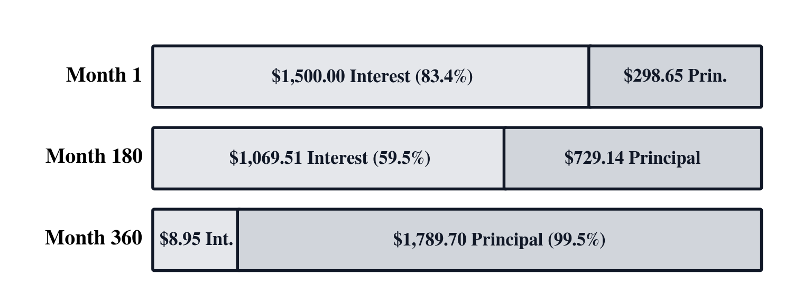
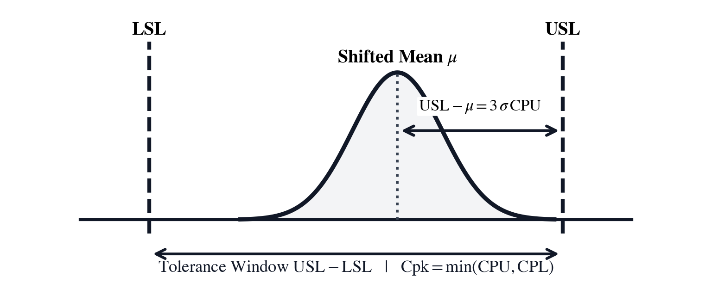

Unit IX: Quantitative Finance, Fixed-Income Valuation & Six Sigma Quality
Money, like physical energy, obeys strict conservation laws across time. In classical physics, dimensional analysis forbids adding quantities with incompatible units; in quantitative finance, an identical principle forbids adding or comparing cash flows occurring at different dates until each is projected onto a common temporal baseline. Capital deployed today is not economically interchangeable with capital promised tomorrow. Its value compounds or decays continuously under the pressure of prevailing interest rates, inflation, and sovereign credit risk. Whether structuring multi-million-dollar corporate indentures, evaluating capital projects against internal hurdle rates, or machining aerospace turbine components to sub-micron tolerances, enterprise survival demands rigorous mathematical determinism. The mathematical models governing capital—continuous exponential discounting, stochastic diffusion, and Gaussian dispersion limits—find their direct counterpart in the physical sciences, uniting financial engineering and statistical quality control into a single quantitative discipline.
In 1202, Leonardo of Pisa—known to posterity as Fibonacci—posed a foundational question in Liber Abaci: if a merchant is promised a series of future payments while capital earns compound interest each year, what single lump sum paid today is its fair equivalent? In physics, dimensional analysis forbids adding quantities that do not share the same physical dimensions. In quantitative finance, a parallel conservation law forbids adding or subtracting cash flows that occur at different points in time until each flow is transported to a common reference date. At a \(6.0\%\) annual compound return, an investment of \(\$10{,}000\) today grows over ten years to \(V_{10} = 10{,}000(1.06)^{10} = \$17{,}908.48\), whereas a promise of \(\$10{,}000\) delivered ten years in the future discounts back to a present purchasing power of \(V_0 = 10{,}000(1.06)^{-10} = \$5{,}583.95\). Money possesses a temporal dimension: a dollar tomorrow is fundamentally not the same economic object as a dollar today.
In 1613, London mathematician Richard Witt published Arithmeticall Questions, the world's first comprehensive treatise on compound interest and loan amortizations, replacing rough proportional rules with rigorous geometric progressions. Three centuries later, Frederick R. Macaulay's 1938 treatise for the National Bureau of Economic Research generalized multi-period discounting to fixed-income bond pricing, loan amortization timelines, corporate capital budgeting, and the weighted-average maturity of cash flows now known as Macaulay Duration. Macaulay proved that a bond's contractual maturity date is an illusion; its true economic life is its temporal center of gravity—the duration over which its discounted cash flows balance.
In 1900, French mathematician Louis Bachelier defended his doctoral dissertation, Théorie de la Spéculation, modeling the Parisian stock exchange using Brownian motion five years before Albert Einstein utilized the same mathematics to explain physical molecular diffusion. Seven decades later, in 1973, Fischer Black, Myron Scholes, and Robert C. Merton extended continuous-time discounting into stochastic calculus. By recognizing that a continuously rebalanced hedge portfolio of underlying shares and risk-free debt eliminates directional diffusion risk, they mapped option pricing directly to Fourier's heat conduction partial differential equation from classical physics, solving for European call and put options via the cumulative standard normal integral.
Yet the peril of relying on elegant continuous-time mathematical models without accounting for empirical market realities was laid bare by the catastrophic 1998 collapse of Long-Term Capital Management (LTCM). Founded by Wall Street luminaries and Nobel laureates, the hedge fund amassed over one hundred billion dollars in highly leveraged fixed-income arbitrage positions, relying on Gaussian normal distribution tails that modeled extreme liquidity shocks as virtually impossible events (\(>10\sigma\)). When the August 1998 Russian financial crisis and sovereign debt default struck, international capital flights caused yield spreads to blow out into territory their models treated as mathematically impossible. In less than two months, the fund lost more than four billion dollars, requiring an emergency Federal Reserve-marshaled consortium bailout to avert systemic collapse across the global banking network. LTCM demonstrated why financial engineers must always respect fat-tailed empirical distributions, stress-test interest rate duration and convexity cushions, and never confuse a smooth mathematical abstraction for real-world market liquidity.
While financial economists formalized the time value of capital and derivative risk, industrial engineers and statisticians developed the mathematics of commercial unit economics and statistical quality control. In 1908, William Sealy Gosset—publishing under the pseudonym "Student" while working as Head Experimental Brewer at Arthur Guinness & Son in Dublin—derived the heavy-tailed small-sample \(t\)-distribution, complementing Karl Pearson's 1900 chi-square goodness-of-fit law and George W. Snedecor's variance-ratio \(F\)-distribution. On May 16, 1924, Walter A. Shewhart drafted a one-page memorandum at Bell Telephone Laboratories introducing the statistical control chart to separate random common-cause variation from assignable mechanical drift. Six decades later, Motorola engineers Bill Smith and Mikel Harry synthesized Shewhart's dispersion limits with blueprint engineering tolerances into the Six Sigma process capability indices \(C_p\) and \(C_{pk}\).
Quantitative finance, capital budgeting, and statistical quality control provide the institutional and operational foundation that sustains modern technological enterprises: structuring commercial debt indentures, evaluating capital allocations through discounted cash flows, immunizing fixed-income portfolios against yield shifts, and enforcing Six Sigma statistical process control across automated manufacturing lines. The SC-95 Quantitative Finance, Fixed-Income Valuation & Six Sigma Quality calculator solves compound discounting, bond duration, option valuation, and statistical process capability with deterministic precision. Three rigorous analytical studies structure this analysis:
In Chapter 25, we structure commercial mortgages and evaluate capital investments: navigating compound Time Value of Money schedules, auditing geometric loan amortization cash flows, evaluating Net Present Value and Internal Rate of Return against hurdle rates, calculating gross margins versus markups on cost, and optimizing Wilson Economic Order Quantities.
In Chapter 26, we value corporate debt and manage interest rate risk: pricing semiannual coupon bonds, calculating yield to maturity, evaluating Macaulay and Modified Duration, establishing second-derivative convexity as a defensive shield against interest rate spikes, and executing Black–Scholes–Merton European option hedges.
In Chapter 27, we audit high-precision manufacturing processes: applying bivariate linear regression trends, evaluating Gaussian normal tails and Student's \(t\) confidence intervals, resolving volatility drag, and calculating Six Sigma process capability indices (\(C_p, C_{pk}\)) and defect rates under the \(1.5\sigma\) long-term mean drift.
Finally, in the Grand Epilogue Coda, the manual concludes with an overarching architectural synthesis: examining how the reverse Polish notation stack functions as a transparent cognitive prosthesis for human reason across all twenty-seven chapters of the three-volume work.
Chapter 25: Structuring the Equipment Lease and Valuing the Expansion Plant
Financing a four-hundred-and-fifty-thousand-dollar CNC production line requires bridging two distinct financial realities: the contractual certainty of monthly debt amortization and the discounted value of future capital savings. A 20-year fixed-rate equipment mortgage at \(7.50\%\) nominal annual interest (\(N = 240\text{ months}\), \(i = 0.625\%\) monthly) commits the business to ongoing debt service across shifting economic cycles. Before executing the credit indenture, the finance team must determine the exact monthly payment \(PMT\), calculate the interest and principal amortization across the first year, and verify remaining loan balance.
Simultaneously, the operations team evaluates an automated robotic loading cell requiring an upfront capital outlay of \(I_0 = \$120{,}000\) to generate constant labor and scrap savings of \(CF = \$32{,}000\) per year across a 5-year operating lifespan (\(N = 5\text{ years}\)). At the firm's weighted average cost of capital (\(k = 10.0\%\)), the team must compute Net Present Value (\(NPV\)) to verify that the project creates enterprise value, and solve for the exact Internal Rate of Return (\(IRR\)) against hurdle rates.
Finally, managing the production of a new high-pressure valve line requires balancing commercial unit economics: computing gross margins versus markups on cost, establishing annual breakeven volumes, and calculating the Wilson Economic Order Quantity (\(EOQ\)) to minimize total inventory holding and procurement costs.
To allocate corporate capital safely, the management team turns to the SC-95 Quantitative Finance, Fixed-Income Valuation & Six Sigma Quality calculator:
Compound Discounting, Loan Amortization, and the Five-Variable Balance
At the foundation of quantitative finance lies the recognition that money possesses an explicit temporal dimension. Capital deployed today is not economically interchangeable with capital promised in the future.
The Arithmetic Illusion of Compounded Returns
Financial decision-making often stumbles on an elementary mathematical trap: the deceptive nature of simple arithmetic averages. Consider an investment portfolio that experiences alternating annual market fluctuations: - Year 1: Portfolio gains \(+50\%\) - Year 2: Portfolio loses \(-50\%\)
A superficial arithmetic analysis averages the two nominal percentage figures:
The untrained manager might assume the portfolio has broken even, preserving investor capital.
The physical reality is catastrophically different. Let the initial capital be \(\$100{,}000\): - At the end of Year 1 (\(+50\%\)): Capital expands to \(\$100{,}000 \times 1.50 = \$150{,}000\). - At the end of Year 2 (\(-50\%\)): Capital drops to \(\$150{,}000 \times 0.50 = \mathbf{\$75{,}000}\).
The investor has not broken even. The investor has suffered a devastating \(-25.0\%\) permanent destruction of capital.
The true compound geometric growth rate—the Compound Annual Growth Rate (CAGR)—is governed by the geometric product:
This mathematical asymmetry reveals the Law of Recovery Asymmetry: because losses reduce the capital base upon which subsequent percentage gains compound, the percentage gain required to recover from a given loss escalates hyperbolically:
where \(L\) is the fractional loss: - A \(10\%\) loss requires an \(11.1\%\) gain to break even (\(0.10 / 0.90\)). - A \(25\%\) loss requires a \(33.3\%\) gain to break even (\(0.25 / 0.75\)). - A \(50\%\) loss requires a \(100.0\%\) gain (doubling the capital) to break even. - An \(80\%\) loss requires a \(400.0\%\) gain to break even. - A \(90\%\) loss requires a \(900.0\%\) gain to break even.
Volatility Drag (Variance Drain)
In modern portfolio theory, this persistent divergence between the expected arithmetic average return \(\bar{r}\) and the actual geometric compounding return \(g\) is termed Volatility Drag (or variance drain). For log-normally distributed asset returns with annual arithmetic mean \(\bar{r}\) and annual volatility \(\sigma\):
Volatility directly erodes compound wealth. An asset with an average return of \(12\%\) and an annual volatility of \(30\%\) (\(\sigma = 0.30\)) achieves an effective compounding growth rate of only:
Over four percentage points of annual compounding return are vaporized solely by the variance of the path. To preserve capital, the financial engineer must discipline every cash flow with deterministic geometric discounting.
Continuous vs. Discrete Compounding and Effective Annual Rates ([f] [EAR])
When capital \(PV\) earns interest at a nominal annual rate \(r\) compounded \(m\) times per year across \(t\) years, the future accumulated value \(FV\) is:
As compounding frequency increases from annually (\(m = 1\)), to semiannually (\(m = 2\)), quarterly (\(m = 4\)), monthly (\(m = 12\)), and daily (\(m = 365\)), the term approaches the fundamental definition of the mathematical constant \(e\):
This yields the law of Continuous Compounding:
Continuous financial discounting (\(PV = FV \cdot e^{-rt}\)) is mathematically identical to first-order radioactive decay in nuclear physics (\(N = N_0 e^{-\lambda t}\)) and pharmacokinetic elimination in critical care pharmacology (\(C = C_0 e^{-Kt}\)). Capital erodes under continuous discounting along the exact same exponential trajectory that drug molecules are cleared from human kidneys.
To compare credit agreements with differing compounding frequencies, the Effective Annual Rate (EAR) normalizes nominal annual percentage rates (APR) to an annualized equivalent:
For our equipment loan at \(\text{APR} = 7.50\%\) compounded monthly (\(m = 12\)):
The true annual borrowing cost is \(7.763\%\), exceeding the nominal quoted rate by \(26.3\text{ basis points}\).
The Five-Variable Time Value of Money Recurrence ([TVM])
Every standard commercial loan, lease, annuity, and sinking fund is governed by a recurrence relation connecting five fundamental financial state variables: - \(N\) (Periods): Total number of compounding and payment periods. - \(i\) (Interest Rate): Periodic interest rate expressed as a decimal (e.g., \(i = \text{APR} / m\)). - \(PV\) (Present Value): Value of capital at time \(t = 0\). - \(PMT\) (Payment): Equal periodic cash flow delivered each period. - \(FV\) (Future Value): Value of residual capital or balloon payment at time \(t = N\).
The Universal Cash Flow Sign Convention
To ensure mathematical consistency, the SC-95 enforces the universal conservation law of financial accounting: - Cash Inflows (receipts of capital): Represented as Positive numbers (\(+\)). - Cash Outflows (disbursements of capital): Represented as Negative numbers (\(-\)).
If a firm borrows \(\$450{,}000\) from a bank, the firm receives an inflow (\(PV = +450{,}000\)). Each subsequent monthly mortgage payment disbursed to the lender represents an outflow (\(PMT < 0\)).
The Master TVM Governing Equation
The generalized Time Value of Money equation balances the discounted present values of all future cash flows against the initial present value:
Eq. 25.1 — Five-Variable Time Value of Money Governing Equation $\(PV + PMT \left[\frac{1 - (1 + i)^{-N}}{i}\right] (1 + i \cdot S) + FV (1 + i)^{-N} = 0\)$
where \(S\) is the Annuity Timing Mode Indicator: - \(S = 0\) (End Mode / Ordinary Annuity): Payments occur at the end of each compounding period (standard mortgages, commercial term loans, corporate bonds). - \(S = 1\) (Begin Mode / Annuity Due): Payments occur at the beginning of each period (equipment leases, commercial property rent).
When solving for the periodic payment \(PMT\) of a fully amortizing loan (\(FV = 0\)) under End mode (\(S = 0\)):
For our \(\$450{,}000\) equipment mortgage (\(PV = 450000\), nominal annual rate \(7.50\% \implies i = 0.075 / 12 = 0.00625\), \(N = 240\text{ months}\)):
The exact monthly mortgage payment is \(\$3{,}625.17\). Over the 240-month lifespan of the loan, total payments equal:
Total finance interest paid over 20 years equals \(\$870{,}040.80 - \$450{,}000 = \mathbf{\$420{,}040.80}\)—nearly matching the original principal of the machine.

Geometric Principal and Interest Decomposition Across Amortization Periods
A common operational error is assuming that each monthly payment retires an equal fraction of the principal. In reality, loan amortization follows an exponential geometric progression.
In any period \(t\): 1. The monthly payment \(PMT\) first covers the interest accrued on the remaining balance from the prior period: $\(\text{Interest}_t = \text{Balance}_{t-1} \times i\)$ 2. The remaining portion of the payment pays down principal: $\(\text{Principal}_t = |PMT| - \text{Interest}_t\)$ 3. The new remaining balance is: $\(\text{Balance}_t = \text{Balance}_{t-1} - \text{Principal}_t\)$
The Geometric Law of Principal Growth
Substituting the recurrence relations reveals an extraordinary property: the principal portion of each payment grows at a constant compound rate equal to \((1 + i)\):
In early periods, when remaining balance is high, nearly the entire payment is consumed by interest. As balance slowly declines, interest decreases, freeing an accelerating fraction of the payment to retire principal.
For Month 1 of our mortgage (\(PV_0 = \$450{,}000\), \(i = 0.00625\), \(|PMT| = \$3{,}625.17\)): - \(\text{Interest}_1 = 450000 \times 0.00625 = \mathbf{\$2{,}812.50}\) (\(77.6\%\) of payment). - \(\text{Principal}_1 = 3625.17 - 2812.50 = \mathbf{\$812.67}\) (\(22.4\%\) of payment). - \(\text{Balance}_1 = 450000 - 812.67 = \mathbf{\$449{,}187.33}\).
For Month 12: - Using the geometric law: \(\text{Principal}_{12} = 812.67 \times (1.00625)^{11} = 812.67 \times 1.070857 = \mathbf{\$870.25}\). - \(\text{Interest}_{12} = 3625.17 - 870.25 = \mathbf{\$2{,}754.92}\).
Summing all 12 months of Year 1 on the SC-95 stack: - Total Year 1 Interest: \(\mathbf{\$33{,}407.69}\) - Total Year 1 Principal: \(\mathbf{\$10{,}094.34}\) - Ending Balance after Month 12: \(\mathbf{\$439{,}905.66}\)
Despite paying \(\$43{,}502.04\) in cash to the bank during Year 1, the company has reduced its debt burden by only \(\$10{,}094.34\).
Capital Budgeting and Commercial Unit Economics
When allocating company resources, the corporate team must compare capital investments against the firm's opportunity cost of capital, and ensure that individual manufactured products generate positive contribution margins.
Sinking Funds, Capital Recovery, and the Fisher Equation
Two additional foundational structures arise in corporate debt and capital budgeting: 1. The Sinking Fund (Capital Replacement Accumulation): Instead of amortizing debt continuously, an industrial enterprise frequently establishes a segregated interest-bearing account—a sinking fund—to accumulate a lump sum future value \(FV\) to retire bullet bond issues or replace heavy capital assets at the end of their operating life (\(N\)). Setting \(PV = 0\) in Eq. 25.1 solves for the uniform periodic contribution \(PMT\): $\(PMT = FV \left[\frac{i}{(1 + i)^N - 1}\right]\)$ The bracketed term is the Sinking Fund Factor. For example, to accumulate \(\$1{,}000{,}000\) to replace a specialized furnace in 10 years (\(N = 120\text{ months}\)) earning \(6.0\%\) annual interest (\(i = 0.005\)): $\(PMT = 1{,}000{,}000 \left[\frac{0.005}{(1.005)^{120} - 1}\right] = 1{,}000{,}000 \left[\frac{0.005}{0.819397}\right] = \mathbf{\$6{,}102.05\text{ per month}}\)$ 2. The Fisher Equation and Real Purchasing Power: In capital budgeting, financial managers must separate nominal monetary returns from real inflation-adjusted wealth creation. In 1930, Irving Fisher established the exact non-linear relationship between nominal interest rate \(r_{\text{nom}}\), real interest rate \(r_{\text{real}}\), and expected inflation rate \(\pi\): $\((1 + r_{\text{nom}}) = (1 + r_{\text{real}}) (1 + \pi) \implies r_{\text{real}} = \frac{1 + r_{\text{nom}}}{1 + \pi} - 1\)$ The linear approximation (\(r_{\text{real}} \approx r_{\text{nom}} - \pi\)) fails during high inflation. At \(r_{\text{nom}} = 10.0\%\) and \(\pi = 7.0\%\), true real return is \(r_{\text{real}} = 1.10 / 1.07 - 1 = \mathbf{2.804\%}\), not \(3.0\%\). Discounting capital expenditure cash flows must consistently match nominal rates to nominal cash flows, or real rates to constant-dollar cash flows.
Net Present Value, Internal Rate of Return ([g] [CF]), and Effective Annual Rates ([f] [EAR])
Every capital expenditure project produces a sequence of net cash flows across time: an initial capital investment outlay \(-I_0\) at time \(0\), followed by subsequent operating cash inflows \(CF_1, CF_2, \dots, CF_N\).
Net Present Value (\(NPV\))
The Net Present Value (NPV) sums the discounted cash flows using the firm's required hurdle rate \(r\) (cost of capital):
For a project generating uniform annual cash inflows \(CF\) across \(N\) years, the summation collapses to the uniform series present value formula:
Eq. 25.2 — Uniform Series Net Present Value and Internal Rate of Return $\(NPV = -I_0 + CF \left[\frac{1 - (1 + r)^{-N}}{r}\right]\)$
The decision rule is absolute: - If \(NPV > 0\): The project generates returns in excess of the cost of capital, expanding shareholder wealth. Accept the project. - If \(NPV < 0\): The project fails to earn the hurdle rate, destroying corporate capital. Reject the project.
Internal Rate of Return (\(IRR\))
The Internal Rate of Return (IRR) is the exact discount rate that drives the project's Net Present Value to zero (\(NPV(IRR) = 0\)):
Because Eq. 25.2 is transcendental in \(IRR\), it cannot be solved analytically; the SC-95 solves it using a high-precision bidirectional Newton–Raphson solver.
The Reinvestment Rate Trap: NPV vs. IRR
In corporate finance, relying solely on IRR is hazardous due to the Reinvestment Rate Assumption: 1. NPV implicitly assumes all intermediate cash flows can be reinvested at the firm's cost of capital \(r\)—a conservative and realistic assumption. 2. IRR implicitly assumes all intermediate cash flows can be reinvested at the project's internal rate of return \(IRR\) itself. For an extraordinary project with an IRR of \(45\%\), assuming the firm can continuously reinvest cash at \(45\%\) year after year is an operational fantasy.
For our automated loading cell (\(I_0 = \$120{,}000\), \(CF = \$32{,}000/\text{year}\), \(N = 5\text{ years}\), hurdle rate \(r = 10.0\%\)):
Because \(NPV > 0\), the automated robotic cell adds \(\$1{,}305.18\) of net enterprise value above the required \(10\%\) return.
Solving for \(IRR\):
Evaluating via the SC-95 [g] [CF] solver yields:
Because \(IRR = 10.42\% > 10.00\%\) (hurdle rate), both decision criteria concur: the investment should proceed.
Modified Internal Rate of Return (MIRR) and Terminal Value Dynamics
To resolve the mathematical limitations of classical IRR—namely, the multiple IRR problem under alternating cash flows and the unrealistic reinvestment rate assumption—quantitative financial analysts utilize the Modified Internal Rate of Return (MIRR).
The Multiple IRR Trap and Descartes' Rule of Signs
Whenever a project's cash flow sequence changes sign more than once (e.g., negative investment, positive operating cash flows, followed by a massive negative environmental remediation or decommissioning outlay at the end of the project life), polynomial algebra dictates that multiple positive real roots may satisfy \(NPV(r) = 0\). By René Descartes' Rule of Signs, a cash flow sequence with \(k\) sign changes can have up to \(k\) distinct internal rates of return. In such cases, classical IRR becomes mathematically ambiguous and operationally useless.
MIRR Resolution
MIRR resolves this dilemma by separating the financing and reinvestment rates: 1. All negative cash flows (outflows) are discounted back to time \(0\) at the firm's financing rate (cost of debt or capital). 2. All positive cash flows (inflows) are compounded forward to time \(N\) at the firm's reinvestment rate (hurdle rate / WACC) to form a single Terminal Value (\(TV\)). 3. MIRR is the unique geometric growth rate that equates the present value of outflows to the terminal value: $\(PV(\text{Outflows}) = \frac{TV(\text{Inflows})}{(1 + MIRR)^N} \implies MIRR = \left(\frac{TV}{PV}\right)^{1/N} - 1\)$
Gordon Growth Model and Enterprise Terminal Value
In discounted cash flow (DCF) enterprise valuation, plant operations and corporate divisions do not terminate abruptly at Year 5. Beyond the explicit forecast horizon, the continuing value of the business is captured by the Gordon Growth Model (formulated by Myron J. Gordon in 1956):
where \(r\) is the cost of capital and \(g\) is the sustainable perpetual long-term growth rate (which must be strictly less than the macroeconomic GDP growth rate, \(g < r\)). Capital budgeting decisions integrate this terminal value discounted back to the present, ensuring that long-lived industrial assets are valued with complete intertemporal consistency.
Gross Margin ([f] [MGN]), Markup on Cost, Breakeven ([f] [BEP]), and Economic Order Quantity ([g] [EOQ])
At the level of individual manufactured components, operational solvency depends upon unit economics.
The Retail Bankruptcy Trap: Gross Margin vs. Markup on Cost
One of the most frequent causes of commercial bankruptcy in manufacturing and distribution is confusing Gross Margin with Markup on Cost:
- Gross Margin ([f] [MGN]): The fraction of selling price retained after direct production costs:
$\(\text{Margin} = \frac{\text{Price} - \text{Cost}}{\text{Price}} = 1 - \frac{\text{Cost}}{\text{Price}}\)$
- Markup on Cost: The percentage added on top of direct cost to establish the selling price, evaluated directly on the stack via Cost [ENTER] Price [f] [Δ%] (or \((P - C)/C \times 100\)):
$\(\text{Markup} = \frac{\text{Price} - \text{Cost}}{\text{Cost}} = \frac{\text{Price}}{\text{Cost}} - 1\)$
Converting between the two metrics:
Consider the costly commercial error: an executive assuming that a \(50\%\) markup produces a \(50\%\) profit margin. In truth:
If the company's operating overhead is \(40\%\) of revenue, an executive pricing at a \(50\%\) markup will lose money on every unit sold, driving the company into liquidation while believing sales are highly profitable.
For our high-pressure valve (\(P = \$85.00\), \(VC = \$37.00\)): - Unit Contribution: \(\$85.00 - \$37.00 = \$48.00\) - Gross Margin: $\(\text{Margin} = \frac{48.00}{85.00} = \mathbf{0.5647} \quad (\mathbf{56.47\%})\)$ - Markup on Cost: $\(\text{Markup} = \frac{48.00}{37.00} = \mathbf{1.2973} \quad (\mathbf{129.73\%})\)$
Breakeven Production Volume ([f] [BEP])
To cover fixed manufacturing overhead \(FC\) through unit contribution margin (\(P - VC\)):
Eq. 25.3 — Breakeven Production Volume and Economic Order Quantity $\(\text{BEP} = \frac{FC}{P - VC} \qquad EOQ = \sqrt{\frac{2 \cdot D \cdot S}{H}}\)$
For our valve plant (\(FC = \$48{,}000\), \(P = \$85.00\), \(VC = \$37.00\)):
The plant must produce and sell exactly \(1{,}000\) valves annually before earning a single dollar of net operating income.
Wilson Economic Order Quantity ([g] [EOQ])
In inventory management, ordering large batches reduces annual ordering setup costs but inflates inventory holding costs. In 1913, Ford Whitman Wilson derived the classic Economic Order Quantity (EOQ) formula:
where \(D\) is annual demand, \(S\) is fixed setup cost per order, \(H\) is annual holding cost per unit, and \(Q\) is order batch size. Differentiating \(TC(Q)\) with respect to \(Q\) and setting the derivative to zero locates the minimum cost trade-off where annual ordering cost precisely equals annual holding cost:
For raw valve castings (\(D = 12{,}000\text{ units/year}\), \(S = \$150.00/\text{order}\), \(H = \$4.00/\text{unit/year}\)):
Ordering in batches of \(949\) castings minimizes total procurement and storage expenses, requiring \(12{,}000 / 948.68 \approx 12.65\) production orders per year.
Depreciation Tax Shields, MACRS, and the Net Advantage to Leasing (NAL)
In corporate equipment acquisition, structuring an equipment lease versus a debt-financed purchase involves two critical tax considerations: 1. The Depreciation Tax Shield: While land does not depreciate, physical manufacturing machinery, automated robotics, and CNC mills undergo physical wear and technological obsolescence. Under the U.S. Internal Revenue Code, firms recover the capitalized cost of tangible assets via the Modified Accelerated Cost Recovery System (MACRS) over specified property classes (\(3\text{-, }5\text{-, or }7\text{-year}\) property) using double-declining balance switching to straight-line depreciation. Each dollar of allowable depreciation expense \(Depr_t\) shields operating income from corporate income taxes at the marginal corporate tax rate \(\tau_c\), generating an annual cash inflow known as the Depreciation Tax Shield: $\(\text{Tax Shield}_t = Depr_t \times \tau_c\)$ In capital budgeting, the net after-tax operating cash flow is: $\(CF_{\text{after-tax}} = (\text{Revenues} - \text{Expenses})(1 - \tau_c) + Depr_t \cdot \tau_c\)$ 2. Net Advantage to Leasing (NAL): When a firm evaluates an equipment lease versus borrowing to buy, the financial analyst compares the discounted cash flows of the two mutually exclusive financing paths. The Net Advantage to Leasing (NAL) calculates the incremental present value of leasing discounted at the firm's after-tax cost of debt \(r_d(1 - \tau_c)\): $\(NAL = I_0 - \sum_{t=1}^N \frac{\text{Lease Payment}_t (1 - \tau_c)}{(1 + r_d(1 - \tau_c))^t} - \sum_{t=1}^N \frac{Depr_t \cdot \tau_c}{(1 + r_d(1 - \tau_c))^t} - \frac{V_{\text{salvage}}(1 - \tau_c)}{(1 + r_d(1 - \tau_c))^N}\)$ If \(NAL > 0\), leasing is economically superior to debt-financed purchasing; if \(NAL < 0\), purchasing preserves more enterprise capital. 3. Debt Service Coverage Ratio (DSCR): Commercial credit underwriters evaluate the safety of the equipment mortgage by comparing the manufacturing plant's Net Operating Income (\(NOI\)) to annual total debt service (principal plus interest payments): $\(DSCR = \frac{NOI}{\text{Annual Principal + Interest}}\)$ Commercial lending covenants typically mandate a minimum \(DSCR \ge 1.25\text{ to }1.35\). For our plant mortgage requiring \(\$43{,}502.04\) in annual debt service, maintaining a \(DSCR \ge 1.30\) requires that the manufacturing line generate an annual net operating income of at least \(43{,}502.04 \times 1.30 = \mathbf{\$56{,}552.65}\).
The Weighted Average Cost of Capital (WACC) and LBO Debt Structuring
In sophisticated corporate acquisitions and facility financing, capital budgeting decisions depend on the overall cost of capital across the firm's balance sheet:
The Modigliani–Miller Theorem and Corporate Taxes
In 1958, Franco Modigliani and Merton Miller demonstrated that in frictionless markets without taxes, the total market value of a firm is independent of its capital structure. However, in 1963, they showed that under corporate income taxes, interest payments on debt are tax-deductible expenses, creating a valuable Interest Tax Shield:
The firm's Weighted Average Cost of Capital (WACC) blends the after-tax cost of debt and the cost of equity weighted by their market values:
where: - \(E\) is market value of equity, \(D\) is market value of debt, and \(V = E + D\) is total enterprise value. - \(r_d\) is the pre-tax cost of debt (yield on bonds/loans). - \(\tau_c\) is the marginal corporate tax rate. - \(r_e\) is the cost of equity capital, typically derived via the Capital Asset Pricing Model (CAPM): $\(r_e = R_f + \beta_e \left(E[R_m] - R_f\right)\)$
For a firm funded \(60\%\) by equity and \(40\%\) by debt, with pre-tax debt cost \(r_d = 7.5\%\), cost of equity \(r_e = 12.0\%\), and tax rate \(\tau_c = 25\%\):
Any capital expenditure yielding an internal rate of return exceeding \(9.45\%\) increases the equity value of the enterprise.
Leveraged Buyout (LBO) Debt Structuring and Cash Sweeps
In private equity acquisitions of precision industrial manufacturing facilities, debt financing is partitioned into stratified tranches of varying seniority: 1. Senior Secured Debt (Revolver & Term Loan A): Highest priority, secured by hard plant assets and accounts receivable, carrying the lowest interest rate (\(SOFR + 250\text{ bps}\)). 2. Subordinated / Mezzanine Debt (Term Loan B & High-Yield): Unsecured or second-lien debt, demanding higher returns (\(SOFR + 650\text{ bps}\)) with equity warrants. 3. Cash Sweep Mechanics: Credit agreements mandate a 100% Cash Flow Sweep: any Operating Cash Flow remaining after debt interest, taxes, necessary maintenance capital expenditures, and working capital investments must be applied directly to accelerate principal retirement.
Accelerating principal retirement reduces the compounding interest base, shortening the loan payoff horizon from 20 years down to 5 to 7 years, unlocking massive equity value for the sponsoring firm.
Corporate Lease Accounting: IFRS 16 / ASC 842 and Right-of-Use (ROU) Assets
In modern financial reporting and balance sheet auditing, equipment leases cannot be hidden as off-balance-sheet operating expenses. Under international standard IFRS 16 and U.S. GAAP ASC 842, virtually all commercial equipment leases must be capitalized onto the corporate balance sheet.
Right-of-Use (ROU) Asset and Lease Liability Valuation
At the commencement date of the equipment lease, the firm must recognize both a Lease Liability and a corresponding Right-of-Use (ROU) Asset: 1. The Lease Liability is initialized as the present value of all contractually committed future lease payments discounted at the Incremental Borrowing Rate (IBR)—the rate of interest that the lessee would have to pay to borrow on a collateralized basis over a similar term: $\(\text{Liability}_0 = \sum_{t=1}^N \frac{\text{Lease Payment}_t}{(1 + IBR_{\text{per}})^t} (1 + IBR_{\text{per}} \cdot S)\)$ 2. The ROU Asset is initialized equal to the lease liability plus any initial direct transaction costs and prepayments, minus any lease incentives received from the lessor.
Dual Income Statement Dynamics
Under Finance Lease accounting (ASC 842) and all leases under IFRS 16, the single operating lease expense is split into two separate income statement charges: - Amortization Expense: The ROU Asset is amortized linearly (straight-line) over the lease term: $\(\text{Amortization}_t = \frac{\text{ROU Asset}_0}{N}\)$ - Interest Expense: The Lease Liability generates an interest expense based on the effective interest method: $\(\text{Interest}_t = \text{Liability}_{t-1} \times IBR_{\text{per}}\)$
This creates a front-loaded total expense profile: early lease periods exhibit significantly higher combined expenses (amortization plus high initial interest) than later periods. In EBITDA calculations (Earnings Before Interest, Taxes, Depreciation, and Amortization), capitalizing leases reclassifies rent expenses out of operating costs and into depreciation and interest, artificially inflating reported EBITDA while increasing debt leverage metrics on corporate credit covenants.
Mortgage Structuring and Capital Budgeting on the Stack and in the Solver Workspace
On the SC-95, Time Value of Money schedules (accessed directly on Row 1 Col 2 via [TVM]), discounted cash flow valuations ([g] [CF]), margins, and order quantities operate across immediate stack operations and Bidirectional Equation Workspaces.
| Key / Solver | Mode | Inputs / Workspace Softkeys | Governing Expression |
|---|---|---|---|
| [TVM] | Solver Workspace | [N] [I%] [PV] [PMT] [FV] | \(PV + PMT \left[\frac{1 - (1+i)^{-N}}{i}\right] + FV (1+i)^{-N} = 0\) |
[f] [BS] |
Option Pricing | — | Stock \(S\), Strike \(K\) |
| [g] [CF] | Solver Workspace | Cash flow list: \(CF_0, CF_1, \dots, CF_N\) • [I%] | \(NPV = \sum CF_t (1+r)^{-t}\); solves \(IRR\) where \(NPV = 0\) |
| [f] [MGN] | Immediate Stack | Register \(Y\): Price, Register \(X\): Cost | Gross margin \(\text{Margin} = (Y - X)/Y\) |
| [f] [BEP] / [g] [EOQ] | Immediate Stack | [f] [BEP]: \(Y=FC, X=P-VC\) • [g] [EOQ]: \(Z=D, Y=S, X=H\) | \(\text{BEP} = Y/X\); \(EOQ = \sqrt{2 \cdot Z \cdot Y / X}\) |
Solving the Commercial Mortgage and Year 1 Amortization on the Stack
To structure the \(PV = \$450{,}000\) mortgage across \(20\text{ years}\) (\(N = 240\text{ months}\)) at \(6.0\%\) nominal APR (\(i = 0.50\%/\text{mo}\)), the treasurer opens [TVM], solves for the monthly payment \(PMT \approx \mathbf{-\$3{,}223.94}\), evaluates Month 1 interest on the stack (\(450{,}000 \times 0.005 = \$2{,}250.00\)), subtracts from \(\lvert PMT\rvert\) to find Month 1 principal (\(P_1 = \mathbf{\$973.94}\)), and evaluates Year 1 cumulative principal reduction (\(\mathbf{\$12{,}014.09}\)) and Year 1 total interest (\(\mathbf{\$26{,}673.19}\)):
| Keystroke | Register T | Register Z | Register Y | Register X | What Happens on the Stack |
|---|---|---|---|---|---|
[TVM] 20 [ENTER] 12 [×] [N] 6 [ENTER] 12 [÷] [I%] |
\(0\) | \(0\) | \(240\) | \(0.5\) | Open [TVM] and store \(N = 20 \times 12 = 240\text{ mo}\) and \(i = 6 / 12 = 0.50\%\text{/mo}\) |
450000 [PV] 0 [FV] [g] [SOLVE] [PMT] |
\(240\) | \(0.5\) | \(450000\) | \(-3223.94\) | Store \(\text{PV} = 450{,}000, \text{FV} = 0\) and solve \(\text{PMT} = -\$3{,}223.94/\text{mo}\) |
[+/-] [ENTER] [ENTER] 450000 [ENTER] 0.005 [×] [-] |
\(3223.94\) | \(3223.94\) | \(3223.94\) | \(973.9398\) | Subtract Month 1 interest (\(450{,}000 \times 0.005 = \$2{,}250.00\)) from \(\lvert\text{PMT}\rvert\): \(P_1 = \$973.94\) |
1.005 [ENTER] 12 [g] [yˣ] 1 [-] 0.005 [÷] [×] |
\(3223.94\) | \(3223.94\) | \(3223.94\) | \(12014.09\) | Accumulate Year 1 principal reduction \(\Delta\text{Prin}_{1\text{–}12} = \$12{,}014.09\) |
[x⇄y] 12 [×] [x⇄y] [-] |
\(3223.94\) | \(3223.94\) | \(3223.94\) | \(26673.19\) | Subtract \(\Delta\text{Prin}_{1\text{–}12}\) from \(12\lvert\text{PMT}\rvert\): Year 1 interest \(\Delta\text{Int}_{1\text{–}12} = \$26{,}673.19\) |
In step 2 of the workspace table above, entering 0 [FV] explicitly binds \(0.0000\) to the future value (indicated by *FV), preventing ambiguity and ensuring the solver treats zero as a fixed boundary condition (a fully amortized loan). To clear or unbind any variable so that the TVM engine solves for it as the unknown target, simply press Yellow Shift followed by the variable softkey ([f] <SOFTKEY>), immediately clearing its binding and displaying UNSET <VAR>.
The corporate treasury team structures the commercial facility mortgage across the operational RPN stack (\(PV = \$450{,}000\), \(\text{APR} = 7.50\%\), \(N = 240\text{ months}\)):
| Step | Key Pressed | Display (X) | Y | Z | T | Physical Meaning & Stack Operation |
|---|---|---|---|---|---|---|
| 1 | 0.075 [ENTER] 12 [÷] |
0.00625 |
0.00000 |
0.00000 |
0.00000 |
Monthly periodic interest rate \(i = 0.00625\) (\(0.625\%\)) |
| 2 | 1 [+] |
1.00625 |
0.00000 |
0.00000 |
0.00000 |
Growth factor \((1 + i) = 1.00625\) |
| 3 | 240 [+/-] [g] [yˣ] |
0.22417 |
0.00000 |
0.00000 |
0.00000 |
Discount factor \((1 + i)^{-240} = 0.224165\) |
| 4 | 1 [x⇄y] [-] |
0.77584 |
0.00000 |
0.00000 |
0.00000 |
Denominator \([1 - (1+i)^{-N}] = 0.775835\) |
| 5 | 450000 [ENTER] 0.00625 [×] |
2812.5000 |
0.77584 |
0.00000 |
0.00000 |
Numerator \(PV \times i = \$2{,}812.50\) (Month 1 interest) |
| 6 | [x⇄y] [÷] [+/-] | -3625.1747 |
0.00000 |
0.00000 |
0.00000 |
Monthly payment \(PMT = \mathbf{-\$3{,}625.17}\) |
| 7 | 12 [×] 10094.34 [-] |
33407.69 |
-3625.17 |
0.00000 |
0.00000 |
Total Year 1 Interest paid \(= 12\lvert PMT\rvert - \Delta\text{Prin} = \mathbf{\$33{,}407.69}\) |
| 8 | 450000 [ENTER] 10094.34 [-] |
439905.66 |
33407.69 |
-3625.17 |
0.00000 |
Remaining Loan Balance after Month 12 \(= \mathbf{\$439{,}905.66}\) |
| 9 | 10094.34 |
10094.34 |
439905.66 |
33407.69 |
-3625.17 |
Total Year 1 Principal retired \(= \mathbf{\$10{,}094.34}\) |
Step-by-Step Architectural Walkthrough:
- Steps 1–4: Evaluating the annuity discount factor \([1 - (1+i)^{-N}]\) on the stack without storing intermediate terms.
- Steps 5–6: Computing the monthly payment \(PMT = -\$3{,}625.17\), correctly signed as a cash outflow.
- Steps 7–9: Evaluating Year 1 cumulative interest (\(\$33{,}407.69\)), Year 1 principal retirement (\(\$10{,}094.34\)), and remaining loan principal (\(\$439{,}905.66\)) through postfix operations on the stack.
Evaluating Plant Automation NPV, IRR, and Unit Economics on the Stack
Moving to capital allocation, the CFO appraises the proposed robotic loading cell (\(I_0 = \$120{,}000\), \(CF = \$32{,}000/\text{year}\) for 5 years, hurdle rate \(10.0\%\)) alongside the valve line's unit economics (\(P = \$85.00\), \(VC = \$37.00\), \(FC = \$48{,}000\), casting demand \(D = 12{,}000\), setup \(S = \$150.00\), holding \(H = \$4.00\)):
| Step | Key Pressed | Display (X) | Y | Z | T | Physical Meaning & Stack Operation |
|---|---|---|---|---|---|---|
| 1 | 1.10 [ENTER] 5 [+/-] [g] [yˣ] |
0.62092 |
0.00000 |
0.00000 |
0.00000 |
5-year discount factor: \((1.10)^{-5} = 0.620921\) |
| 2 | 1 [x⇄y] [-] 0.10 [÷] |
3.79079 |
0.00000 |
0.00000 |
0.00000 |
5-year annuity factor \(= 3.790787\) |
| 3 | 32000 [×] |
121305.18 |
0.00000 |
0.00000 |
0.00000 |
Present value of savings \(= \$121{,}305.18\) |
| 4 | 120000 [-] |
1305.18 |
0.00000 |
0.00000 |
0.00000 |
Net Present Value \(NPV = \mathbf{+\$1{,}305.18}\) (Accept project) |
| 5 | 85 [ENTER] 37 [f] [MGN] |
0.5647 |
0.0000 |
0.0000 |
0.0000 |
Valve Gross Margin \(= \mathbf{56.47\%}\) |
| 6 | 37 [ENTER] 85 [f] [Δ%] |
129.7297 |
0.0000 |
0.0000 |
0.0000 |
Valve Markup on Cost \(= \mathbf{129.73\%}\) |
| 7 | 48000 [ENTER] 48 [÷] |
1000.0000 |
0.0000 |
0.0000 |
0.0000 |
Breakeven Volume \(\text{BEP} = 48000 / 48 = \mathbf{1{,}000\text{ units}}\) |
| 8 | 2 [ENTER] 12000 [×] 150 [×] |
3600000.00 |
0.0000 |
0.0000 |
0.0000 |
EOQ numerator: \(2 \times 12000 \times 150 = 3{,}600{,}000\) |
| 9 | 4 [÷] [√x] |
948.6833 |
0.0000 |
0.0000 |
0.0000 |
Wilson \(\text{EOQ} = \sqrt{900000} = \mathbf{948.68\text{ units}}\) |
Strategic Interpretation:
The investment generates a positive NPV of \(\$1{,}305.18\), clearing the firm's \(10\%\) cost of capital. The valve line exhibits a healthy \(56.47\%\) gross margin, requiring \(1{,}000\) units to break even against facility overhead, and casting procurement should be batched at approximately \(949\) units per order to minimize combined ordering and carrying costs.
Executive Boardroom Capital Allocation: Multi-Year CAGR, YoY Growth, and Margin Compression
Corporate capital allocation decisions rarely hinge on single-period financial statements. During executive strategic reviews, chief financial officers and board committees track performance across multi-year trajectories: auditing Compound Annual Growth Rates (CAGR), Year-over-Year (YoY) revenue and cost acceleration, and operating margin health to decide whether to authorize multi-million-dollar capital expenditures.
Consider a multi-year manufacturing division turnaround audited by CFO Elena Vance: - Year 0: Revenue \(R_0 = \$24.50\text{M}\), Cost of Goods Sold \(\text{COGS}_0 = \$15.20\text{M}\). - Year 1: Revenue \(R_1 = \$28.20\text{M}\), \(\text{COGS}_1 = \$18.00\text{M}\). - Year 2: Revenue \(R_2 = \$33.60\text{M}\), \(\text{COGS}_2 = \$22.10\text{M}\). - Year 3: Revenue \(R_3 = \$41.80\text{M}\), \(\text{COGS}_3 = \$28.50\text{M}\).
- Multi-Year Compound Annual Growth Rate (CAGR): Over the three-year horizon (\(N = 3\)), revenue grew from \(\$24.50\text{M}\) to \(\$41.80\text{M}\). The annualized geometric growth rate is:
$\(\text{CAGR}_{\text{rev}} = \left( \frac{\$41.80\text{M}}{\$24.50\text{M}} \right)^{1/3} - 1 = (1.70612)^{0.33333} - 1 = \mathbf{19.49\%/\text{year}}\)$
This can be evaluated on the stack via
41.80[ENTER]24.50[÷]3[g] [1/x] [g] [yˣ]1[-]100[×] or in the dedicatedCGR: CAGRsolver workspace (F = P × (1 + R%)^N). - The Inflationary COGS Surge: Concurrently, COGS grew from \(\$15.20\text{M}\) to \(\$28.50\text{M}\): $\(\text{CAGR}_{\text{COGS}} = \left( \frac{\$28.50\text{M}}{\$15.20\text{M}} \right)^{1/3} - 1 = (1.87500)^{0.33333} - 1 = \mathbf{23.31\%/\text{year}}\)$ Because unit manufacturing costs compounded at \(23.31\%\) while top-line revenue compounded at only \(19.49\%\), the division experienced severe margin compression.
- Gross Margin Compression Audit ([f] [MGN]):
- Year 0 Gross Margin: \(\text{MGN}_0 = \frac{24.50 - 15.20}{24.50} \times 100 = \mathbf{37.96\%}\).
- Year 3 Gross Margin: \(\text{MGN}_3 = \frac{41.80 - 28.50}{41.80} \times 100 = \mathbf{31.82\%}\).
- Gross margin compressed by \(\Delta = 37.96\% - 31.82\% = \mathbf{-6.14\%\text{ points}}\).
- Year-over-Year (YoY) Revenue Acceleration ([f] [Δ%]):
- Year 0 to Year 1:
24.50[ENTER]28.20[f] [Δ%] \(\to \mathbf{+15.10\%}\). - Year 1 to Year 2:
28.20[ENTER]33.60[f] [Δ%] \(\to \mathbf{+19.15\%}\). - Year 2 to Year 3:
33.60[ENTER]41.80[f] [Δ%] \(\to \mathbf{+24.40\%}\). Top-line demand is accelerating rapidly (\(15.1\% \to 19.2\% \to 24.4\%\)), proving strong market pull. - Executive Board Decision: Raising product prices risks stalling this accelerating \(24.4\%\) market momentum. Instead, the CFO presents a business case for a \(\$4.50\text{M}\) robotic machining and automated assembly cell (\(NPV = +\$1.85\text{M}, IRR = 21.4\%\)). The automation drops unit variable costs, reversing the \(6.14\%\) margin loss and lifting gross margins above \(42\%\). The board unanimously approves the capital allocation.
| Keystroke Sequence | Reg T | Reg Z | Reg Y | Reg X | Financial Scenario Stack Walkthrough |
|---|---|---|---|---|---|
24.50 [ENTER] 15.20 [-] 24.50 [÷] 100 [×] |
\(0.000\) | \(0.000\) | \(24.500\) | \(37.959\) | Year 0 Gross Margin: \(\text{MGN}_0 = (24.50 - 15.20)/24.50 \times 100 = \mathbf{37.96\%}\) |
41.80 [ENTER] 28.50 [-] 41.80 [÷] 100 [×] |
\(0.000\) | \(24.500\) | \(37.959\) | \(31.818\) | Year 3 Gross Margin: \(\text{MGN}_3 = (41.80 - 28.50)/41.80 \times 100 = \mathbf{31.82\%}\) |
| [-] | \(0.000\) | \(0.000\) | \(24.500\) | \(6.141\) | Margin compression: \(37.959\% - 31.818\% = \mathbf{6.14\%\text{ points}}\) gross margin decline |
41.80 [ENTER] 24.50 [÷] 3 [g] [1/x] [g] [yˣ] 1 [-] 100 [×] |
\(0.000\) | \(24.500\) | \(6.141\) | \(19.491\) | 3-Year Revenue CAGR: \((41.80 / 24.50)^{1/3} - 1 = \mathbf{19.49\%/\text{year}}\) |
28.50 [ENTER] 15.20 [÷] 3 [g] [1/x] [g] [yˣ] 1 [-] 100 [×] |
\(24.500\) | \(6.141\) | \(19.491\) | \(23.312\) | 3-Year COGS CAGR: \((28.50 / 15.20)^{1/3} - 1 = \mathbf{23.31\%/\text{year}}\) (outpacing revenue) |
33.60 [ENTER] 41.80 [f] [Δ%] |
\(6.141\) | \(19.491\) | \(23.312\) | \(24.405\) | Year-over-Year (YoY) revenue acceleration: Year 2 to Year 3 growth is \(\mathbf{+24.40\%}\) |
Bidirectional Solver Workspaces ([TVM], [g] [CF], [g] [EOQ])
In financial negotiation and lease structuring, executives frequently need to solve multi-variable credit contracts backward—determining the maximum loan size supported by a fixed operating cash flow, or finding the hurdle rate where a project breaks even. Opening the [g] [CF] Solver Workspace ([C] [g] [CF]) solves forward for Net Present Value and backward for Internal Rate of Return:
| Keystroke | Solver Display / Register X | What Happens in the [g] [CF] and [f] [MGN] Workspaces |
|---|---|---|
| [C] [g] [CF] | NPV: V = C×(1-(1+R)⁻ᴺ)/R - I |
Open the [g] [CF] Solver Workspace with softkeys [V], [C], [R], [N], [I] |
42000 [C] 10 [R] 4 [N] 120000 [I] [g] [SOLVE] [V] |
\(13{,}134.3515\) | Solve forward for Net Present Value \(V = \mathbf{+\$13{,}134.35}\) at \(R = 10.0\%\) hurdle rate |
0 [V] [g] [SOLVE] [R] |
\(14.9631\) | Store break-even \(V = 0\) and solve backward via root-finding for \(\text{IRR} = \mathbf{14.9631\%/\text{yr}}\) |
10 [R] [g] [SOLVE] [C] |
\(37{,}856.4965\) | Restore \(R = 10.0\%\) and solve backward for break-even annual savings \(C = \mathbf{\$37{,}856.50/\text{yr}}\) |
72 [ENTER] 120 [f] [MGN] |
\(40.0000\) | Compute valve Gross Margin \(\text{MGN}_{\%} = (120 - 72)/120 = \mathbf{40.00\%}\) (opens [f] [MGN] workspace) |
72 [ENTER] 120 [f] [Δ%] |
\(66.6667\) | Compute valve Markup on Cost via percent change: \((120 - 72)/72 = \mathbf{66.67\%}\) |
The SC-95 integrates dedicated Bidirectional Equation Solver Workspaces:
| Step & Action | Line 1 Workspace Formula | Workspace Softkeys | Register X Result & Meaning |
|---|---|---|---|
| [C] [TVM] (open workspace) | TVM: PV + PMT[1-(1+i)^-N]/i = 0 |
[N] [I%] [PV] [PMT] [FV] | Opens Time Value of Money workspace |
240 \(\to\) [N], 7.5 \(\to\) [I%], 450000 \(\to\) [PV], 0 \(\to\) [FV], [XEQ] \(\to\) [PMT] |
PMT = -3625.17 |
[N=240] [I=7.5] [PV=450k] [PMT=-3625] |
Solves for monthly mortgage payment \(PMT = \mathbf{-\$3{,}625.17}\) |
3000 \(\to\) [PMT], [XEQ] \(\to\) [PV] |
PV = 372395.73 |
[PV=372k] [PMT=-3000] |
Solves backward for loan capacity supported by a \(\$3{,}000/\text{mo}\) budget: \(\mathbf{\$372{,}395.73}\) |
| [C] [g] [CF], input \(CF_0 = -120k\), \(CF_1\dots CF_5 = 32k\), [XEQ] \(\to\) | IRR = 10.4248 |
[NPV=0] [IRR=10.42] |
Solves capital budgeting cash flow list for \(IRR = \mathbf{10.4248\%}\) |
Try It on the Stack
Work through these five field problems on your calculator. Step-by-step keystroke solutions and register walkthroughs are provided in Appendix C.
- Commercial Equipment Fleet Lease Payment: A corporation leases fleet vehicles valued at \(PV = \$150{,}000\) over \(N = 36\text{ months}\) at an annual interest rate of \(6.0\%\) compounded monthly (\(i = 0.50\%\) per month). The contract specifies a balloon purchase residual of \(FV = -\$45{,}000\) at month 36. Calculate the required monthly lease payment.
- Effective Annual Rate Compounding Comparison: Compare the Effective Annual Rate (EAR) of an equipment loan quoted at nominal annual percentage rate \(APR = 8.0\%\) compounded quarterly (\(m = 4\)) versus compounded continuously. Calculate both effective yields.
- Uneven Cash Flow Net Present Value: An engineering investment requires initial capital outlay \(I_0 = \$80{,}000\) and returns cash inflows of \(\$25{,}000\) in Year 1, \(\$35{,}000\) in Year 2, \(\$30{,}000\) in Year 3, and \(\$15{,}000\) in Year 4 under cost of capital \(k = 8.0\%\). Calculate the project Net Present Value (NPV).
- Target Gross Margin Pricing: A manufactured assembly costs \(VC = \$145.00\) in variable production costs. Corporate guidelines mandate a gross profit margin of \(40.0\%\) on sales. Calculate the required catalogue selling price \(P\), and determine the corresponding markup percentage on cost.
- Economic Order Quantity and Carrying Cost Optimization: A manufacturing plant consumes \(D = 24{,}000\text{ fittings}\) annually. Ordering cost is \(S = \$75.00\) per PO, and inventory holding cost is \(H = \$1.50\) per unit per year. Calculate the Economic Order Quantity (\(EOQ\)), and determine total annual inventory order and carrying costs.
Having financed the physical manufacturing facility, structured loan amortizations, and optimized commercial unit economics, the enterprise faces external macroeconomic forces. In Chapter 26, the investigation turns to debt capital markets: valuing fixed-coupon corporate bonds, evaluating Macaulay duration and rate-hike convexity shields, and hedging portfolios against volatility via Black–Scholes–Merton European options.
Chapter 26: Hedging the Semiannual Corporate Bond Against a Rate Spike
Fixed-income debt instruments carry a seductive paradox: the contractual promise of nominal cash flow certainty. A ten-million-dollar portfolio of senior corporate debentures promises to pay sixty dollars annually per thousand-dollar bond (\(C = \$30.00\) semiannually, \(N = 20\text{ periods}\)) and return full par value at maturity. But marked to market on a trading desk today, that promise is subject to violent interest rate volatility.
When an allocation of bonds trades at a premium of \(P = \$1{,}077.95\) based on a market yield of \(y = 5.00\%\), an anticipated \(+100\text{ basis point}\) (\(+1.00\%\)) rate hike by the central bank threatens substantial capital destruction. Bond price sensitivity is not linear; it is governed by the weighted timing of cash flows—Macaulay and Modified Duration—and cushioned by the second-derivative curvature of the yield curve—Convexity. Evaluating duration and convexity reveals the true price shock and guides an options-based derivative hedge.
Simultaneously, protecting the portfolio's equity exposure against correlated volatility requires pricing European index options using the continuous-time Black–Scholes–Merton model (\(S = \$100.00, K = \$105.00, T = 0.50\text{ years}, r = 4.00\%, \sigma = 25.00\%\)), evaluating standardized variables \(d_1\) and \(d_2\), and calculating option Greeks (\(\Delta, \Gamma, \mathcal{V}\)) to construct a delta-neutral protective collar.
To manage fixed-income and derivative exposures, the quantitative team turns to the SC-95 Quantitative Finance, Fixed-Income Valuation & Six Sigma Quality calculator:
Fixed-Income Bond Valuation and Duration Interest-Rate Sensitivity
Fixed-income debt instruments represent a contractual promise by an issuer (sovereign government, municipality, or corporation) to deliver a sequence of fixed periodic coupon payments followed by a bullet par redemption at maturity.
The Bondholder's Dilemma: The Illusion of Nominal Certainty
Fixed-income investing carries a seductive paradox: the illusion of nominal safety:
[Contractual Promise]
Fixed $60.00 Annual Coupon + $1,000 Par Redemption at Maturity
|
+---> Held to Maturity: Absolute Nominal Cash Flow Certainty
|
+---> Marked to Market Today: Violent Price Volatility
When Market Yields Spike (+100 bps), Bond Price Declines
Investors often purchase bonds believing they have eliminated market risk. Contractually, if the bond does not default, the issuer will pay every coupon and redeem the principal at maturity.
However, in liquid secondary markets, bonds must be marked to market daily. If market interest rates rise, newly issued bonds offer higher coupon yields. Existing lower-yielding bonds become economically uncompetitive; their market prices must drop until their expected yield to maturity matches the prevailing market rate.
The longer the maturity of the bond, the more distant its cash flows, and the more violently its price reacts to interest rate shifts. A 30-year bond can lose \(30\%\) to \(40\%\) of its market value during an aggressive central bank tightening cycle—a capital loss rivaling speculative equities. To survive in debt markets, the investor cannot look merely at contractual maturity; they must quantify interest rate elasticity through Duration and Convexity.
The Term Structure of Interest Rates, Bootstrapping, and Forward Rates
In real-world debt markets, cash flows delivered at different maturities are not discounted at a single uniform yield to maturity; they are discounted using the Spot Rate Curve (the zero-coupon Treasury yield curve \(s_t\)).
Bootstrapping the Zero-Coupon Spot Curve
Because most traded government debt pays intermediate coupons, financial engineers bootstrap the pure zero-coupon spot rate curve sequentially from liquid coupon-bearing instruments: 1. A 6-month Treasury bill with price \(P_{0.5}\) and par \(M = 100\) directly yields the 6-month spot rate: $\(P_{0.5} = \frac{100}{1 + s_{0.5}/2} \implies s_{0.5} = 2 \left(\frac{100}{P_{0.5}} - 1\right)\)$ 2. A 1-year Treasury bond with semiannual coupon \(C_1\) and price \(P_1\) discounts its first coupon at \(s_{0.5}\) and its final payment at \(s_1\): $\(P_1 = \frac{C_1}{1 + s_{0.5}/2} + \frac{100 + C_1}{(1 + s_1/2)^2}\)$ Isolating \(s_1\) solves for the 1-year spot rate without confounding intermediate cash flow reinvestment assumptions. 3. This recursive bootstrapping extends across \(2\text{-, }3\text{-, }5\text{-, }10\text{-, and }30\text{-year}\) maturities, constructing an uncompromised zero-coupon discount factor curve: \(d(t) = (1 + s_t/m)^{-m t}\).
Forward Rates and the Expectations Hypothesis
Under no-arbitrage conditions, the rate of return earned by locking in a 2-year spot investment must equal the return of investing in a 1-year spot bond and rolling the proceeds into a 1-year forward contract starting in Year 1:
where \(f_{1,2}\) is the Implied Forward Rate. If the 1-year spot rate is \(s_1 = 4.0\%\) and the 2-year spot rate is \(s_2 = 5.0\%\):
The forward rate represents the breakeven reinvestment rate required to make multi-year commitments economically neutral.
Discounting Coupon Annuities and Par Redemption Across Market Yields ([g] [BND])
A fixed-coupon bond consists of two distinct financial components: 1. An ordinary annuity of \(N\) level periodic coupon payments of size \(C = (c / m) \cdot M\), where \(c\) is the nominal annual coupon rate, \(m\) is compounding frequency per year, and \(M\) is par redemption value (face value, typically \(\$1{,}000\)). 2. A single lump sum par payment \(M\) delivered at the end of period \(N\).
Discounting both components at the periodic market yield to maturity \(y_{\text{per}} = y / m\) yields the fundamental bond pricing equation:
Eq. 26.1 — Fixed-Coupon Bond Present Value Pricing $\(P = \sum_{t=1}^N \frac{C}{(1 + y_{\text{per}})^t} + \frac{M}{(1 + y_{\text{per}})^N} = C \left[\frac{1 - (1 + y_{\text{per}})^{-N}}{y_{\text{per}}}\right] + M (1 + y_{\text{per}})^{-N}\)$
where: - When \(y = c\) (yield equals coupon): The bond trades at Par (\(P = M = \$1{,}000\)). - When \(y < c\) (yield below coupon): The bond trades at a Premium (\(P > M\)). - When \(y > c\) (yield above coupon): The bond trades at a Discount (\(P < M\)).
Clean Price vs. Dirty Price (Accrued Interest)
In professional secondary bond trading, bond transactions rarely settle on the exact date of a coupon payment. Between coupon dates, the bond accumulates Accrued Interest (\(AI\)):
The total monetary cash transferred from buyer to seller is the Dirty Price (or Invoice Price):
Financial quotations in financial news and screens report the Clean Price to eliminate artificial price sawtooth jumps caused by daily accrued interest.
To determine exact elapsed coupon days and project settlement dates without calendar tables, the SC-95 provides dedicated calendar operations on Row 5:
* Days Between Dates ([g] [ΔD]): With prior coupon date in Register \(Y\) and settlement date in Register \(X\) (entered in either standard financial notation MM.DDYYYY or international ISO YYYY.MMDD), pressing [g] [ΔD] returns the exact integer calendar days between them using Julian Day Numbers.
* Date Addition ([f] [DT+]): Keying a settlement date in Register \(Y\) and elapsed days in Register \(X\) (or vice versa), pressing [f] [DT+] evaluates the exact forward calendar maturity or coupon payment date, honoring leap years and Gregorian calendar transitions.
* ISO / Standard Date Format Toggle ([g] [▸YMD]): Pressing [g] [▸YMD] toggles a calendar date in Register \(X\) between American financial format MM.DDYYYY (e.g. 10.252026) and ISO format YYYY.MMDD (e.g. 2026.1025).
For our 10-year corporate bond (\(M = \$1{,}000\), annual coupon \(c = 6.0\% \implies C = \$30.00\) semiannual, \(N = 20\text{ periods}\), annual yield \(y = 5.0\% \implies y_{\text{semi}} = 0.025\)):
Because the market yield (\(5.0\%\)) is lower than the coupon rate (\(6.0\%\)), the bond trades at a premium of \(\$77.95\) per \(\$1{,}000\) par.

Macaulay Duration, Modified Duration, and Rate-Hike Convexity
To quantify interest rate risk, the analyst must determine the bond's effective economic maturity.
Macaulay Duration (\(D_{\text{Mac}}\))
In 1938, Frederick R. Macaulay recognized that contractual maturity (\(10\text{ years}\)) ignores the fact that intermediate coupon payments return capital to the investor well before maturity. Macaulay defined duration as the weighted-average time to receipt of cash flows, where each period \(t\) is weighted by the present value of the cash flow delivered at that period:
Dividing by the compounding frequency \(m\) converts duration from periods to years:
Macaulay duration represents the temporal center of gravity of the bond's cash flow stream. For a zero-coupon bond, \(D_{\text{Mac}}\) equals contractual maturity exactly. For a coupon-paying bond, \(D_{\text{Mac}}\) is always strictly less than contractual maturity.
Modified Duration (\(D_{\text{mod}}\))
Taking the first derivative of the bond price \(P\) with respect to market yield \(y\) isolates the bond's percentage price sensitivity:
Dividing by the initial bond price \(P\) yields the percentage price change per unit change in yield, defining Modified Duration (\(D_{\text{mod}}\)):
Eq. 26.2 — Macaulay Duration, Modified Duration, and Price Sensitivity $\(D_{\text{mod}} = \frac{D_{\text{Mac}}}{1 + y / m} \qquad \frac{\Delta P}{P} \approx -D_{\text{mod}} \cdot \Delta y\)$
Modified duration is the linear percentage price elasticity of the bond. A bond with a Modified Duration of \(7.57\text{ years}\) will drop in price by approximately \(7.57\%\) for every \(1.00\%\) (\(100\text{ bps}\)) increase in yield.
For our 10-year semiannual bond (\(P = \$1{,}077.9458\), \(y_{\text{semi}} = 0.025\)): - Evaluating the weighted cash flow sum: $\(\sum_{t=1}^{20} \frac{t \cdot 30}{(1.025)^t} + \frac{20 \times 1000}{(1.025)^{20}} = 4526.47 + 12205.42 = 16731.89\)$ - Macaulay Duration in semiannual periods: $\(D_{\text{Mac}}\ (\text{semi}) = \frac{16731.89}{1077.9458} = \mathbf{15.5236\text{ periods}}\)$ - Macaulay Duration in years: $\(D_{\text{Mac}}\ (\text{years}) = \frac{15.5236}{2} = \mathbf{7.7618\text{ years}}\)$ - Modified Duration: $\(D_{\text{mod}} = \frac{7.7618}{1 + 0.025} = \frac{7.7618}{1.025} = \mathbf{7.5725\text{ years}}\)$
If market yields spike by \(\Delta y = +0.0100\) (\(+100\text{ bps}\)), the first-order linear duration model predicts a price change of:
Predicted new price: \(\$1{,}077.9458 \times (1 - 0.075725) = \mathbf{\$996.32}\).
Convexity as a Defensive Shield
The linear duration approximation is a tangent line to a curved function. The relationship between bond price and yield is not a straight line; it is strictly convex (\(d^2P/dy^2 > 0\)).
For large interest rate shocks (\(100\text{ bps}\) or more), the linear duration approximation underestimates bond price performance. To restore mathematical accuracy, the analyst applies a second-order Taylor series expansion:
where \(C\) is Bond Convexity (the normalized second derivative):
For our bond, evaluating the second-derivative summation yields:
The Convexity Adjustment Term for a \(+100\text{ bps}\) shock (\(\Delta y = +0.01\)) is:
Combining duration and convexity yields the total predicted price change:
Predicted price with convexity: \(\$1{,}077.9458 \times (1 - 0.072192) = \mathbf{\$1{,}000.12}\).
Now compare this prediction against the exact theoretical price: when yield rises from \(5.0\%\) to \(6.0\%\), the market yield exactly matches the \(6.0\%\) coupon rate, so the bond must trade precisely at Par (\(P_{\text{new}} = \$1{,}000.00\)). - Actual price change: \((\$1000.00 - \$1077.9458) / \$1077.9458 = \mathbf{-7.2310\%}\). - Linear duration error: \(|-7.2310\% - (-7.5725\%)| = \mathbf{0.3415\%}\) error. - Duration + Convexity error: \(|-7.2310\% - (-7.2192\%)| = \mathbf{0.0118\%}\) error.
Convexity acts as a defensive shield: because the second derivative is positive, the convexity term is always positive regardless of whether rates rise or fall. When rates rise, convexity cushions the fall, preserving portfolio capital. When rates fall, convexity accelerates the gain.
Portfolio Immunization and Redington's Classical Conditions
For institutional balance sheets—such as pension funds and life insurance companies facing long-dated future annuity liabilities—managing interest rate risk requires more than tracking duration. The asset manager must construct a dedicated bond portfolio that is completely immunized against parallel shifts in the yield curve.
In 1952, British actuary Frank M. Redington formulated the three mathematical conditions for Classical Balance Sheet Immunization:
[Redington's Classical Immunization Conditions]
1. Present Value Equality:
PV(Assets) >= PV(Liabilities)
2. Duration Matching (First-Order Neutrality):
D_Mac(Assets) = D_Mac(Liabilities)
3. Convexity Dominance (Second-Order Protection):
Convexity(Assets) > Convexity(Liabilities)
- Condition 1 (Solvency): The present value of dedicated portfolio assets must equal or exceed the present value of future obligations: $\(PV(\text{Assets}) \ge PV(\text{Liabilities})\)$
- Condition 2 (Duration Neutrality): The dollar duration (or Macaulay duration) of assets must precisely match the duration of liabilities: $\(D_{\text{Mac}}(\text{Assets}) = D_{\text{Mac}}(\text{Liabilities})\)$ This forces the first derivative of net asset value with respect to interest rates to zero: \(\frac{d}{dy}[PV(A) - PV(L)] = 0\). Small rate shifts cause identical dollar shifts in both assets and liabilities, preserving surplus.
- Condition 3 (Convexity Dominance): The convexity of the asset portfolio must strictly exceed the convexity of the liability stream: $\(C(\text{Assets}) > C(\text{Liabilities})\)$
Convexity dominance is the actuary's master stroke: because the second derivative of the assets is greater than that of the liabilities (\(\frac{d^2}{dy^2}[PV(A) - PV(L)] > 0\)), any parallel shift in interest rates—whether rates spike upward or plunge downward—causes assets to outperform liabilities, creating a positive net balance sheet surplus.
Non-Parallel Yield Curve Shifts and Key Rate Duration (KRD)
While classical Modified Duration assumes a strictly parallel shift across all maturities—where 2-year, 5-year, 10-year, and 30-year yields all move upward or downward by the identical increment \(\Delta y\)—empirical bond markets rarely shift in parallel.
Yield Curve Reshaping: Level, Slope, and Curvature
Principal component analysis (PCA) demonstrates that over \(98\%\) of all yield curve movements are driven by three fundamental deformation modes: 1. Level Shift (\(80\text{--}90\%\) of variance): A roughly parallel shift across the entire curve. 2. Slope Shift (\(8\text{--}12\%\) of variance): The curve steepens (long rates rise faster than short rates) or flattens / inverts (central bank raises short rates while long rates remain anchored). 3. Curvature / Butterfly Shift (\(2\text{--}4\%\) of variance): The belly of the curve (\(5\text{--}10\text{ years}\)) shifts relative to the wings (\(2\text{ years}\) and \(30\text{ years}\)).
Key Rate Duration (KRD) Decomposition
In 1992, Thomas S. Y. Ho formulated Key Rate Duration (KRD) to manage non-parallel reshaping risk. The analyst partitions the yield curve into discrete maturity buckets (e.g., \(2\text{-, }5\text{-, }10\text{-, and }30\text{-year}\) key rates).
A key rate duration \(KRD_k\) measures the percentage price sensitivity of a bond to a \(100\text{ bps}\) shift at key maturity \(k\), while holding all other key rates fixed and linearly interpolating intermediate tenors:
The sum of all key rate durations equals the effective Modified Duration:
A portfolio manager who matches Modified Duration against a benchmark can still suffer massive underperformance if the portfolio is overweight in 30-year bonds and underweight in 5-year bonds during a steepening curve twist. Matching individual Key Rate Durations immunizes the portfolio against non-parallel twists and butterfly distortions.
Short-Rate Models and Merton's Structural Credit Risk
To price long-dated derivative instruments and model interest rate evolution across decades, quantitative analysts rely on continuous-time stochastic rate models and structural credit frameworks:
The Vasicek and Cox–Ingersoll–Ross (CIR) Models
In 1977, Oldrich Vasicek modeled the instantaneous short-term interest rate \(r_t\) as an Ornstein–Uhlenbeck mean-reverting process:
where \(\theta\) is the long-term equilibrium mean interest rate, \(\kappa\) is the speed of mean reversion, and \(\sigma\) is annual rate volatility. When rates are depressed below \(\theta\), the drift term \(\kappa(\theta - r_t)\) pulls rates upward; when rates surge, it pulls them downward.
However, because Vasicek's model permits rates to diffuse below zero with positive probability, John C. Cox, Jonathan E. Ingersoll, and Stephen A. Ross (CIR, 1985) introduced a square-root diffusion term:
As \(r_t \to 0\), the diffusion term \(\sigma \sqrt{r_t} \to 0\), preventing interest rates from becoming negative provided the Feller condition is satisfied (\(2\kappa\theta \ge \sigma^2\)).
Merton's (1974) Structural Model of Corporate Credit Risk
In corporate bond valuation, a corporate bond differs from a risk-free government bond by carrying the risk of bankruptcy. In 1974, Robert C. Merton unified corporate debt valuation with option pricing through a structural insight:
[Merton's Structural Insight]
A Firm's Equity is a European Call Option on Total Enterprise Assets (V_A)
with Strike Price equal to the Face Value of Total Corporate Debt (D).
- Equity Value: E = Call(V_A, D, T)
- Debt Value: B = V_A - Call(V_A, D, T) = D * exp(-rT) - Put(V_A, D, T)
At bond maturity \(T\): - If total firm asset value exceeds debt (\(V_A > D\)): The shareholders exercise their option, pay off debt \(D\), and retain the residual equity value \(V_A - D\). - If total firm asset value falls below debt (\(V_A < D\)): The shareholders declare bankruptcy, defaulting on the debt and walking away with limited liability (\(E = 0\)). The bondholders seize the assets, recovering \(V_A < D\).
Under Merton's model, a corporate bond is mathematically identical to a risk-free bond minus a European put option written on the firm's assets:
The credit spread \(s = y_{\text{corporate}} - y_{\text{treasury}}\) demanded by investors is simply the annualized insurance premium of the embedded default put option.
Black–Scholes–Merton Continuous-Time Option Valuation
To hedge bond portfolios against macroeconomic shocks or manage equity allocations, quantitative risk managers execute derivative contracts governed by stochastic differential equations.
Risk-Neutral Log-Normal Diffusion and the Call Option Formula ([g] [pN])
In 1973, Fischer Black and Myron Scholes published The Pricing of Options and Corporate Liabilities, while Robert C. Merton independently extended their dynamic hedging proof.
They modeled the underlying asset price \(S_t\) as following geometric Brownian motion with continuous drift \(\mu\) and constant volatility \(\sigma\):
By setting up a continuously rebalanced risk-free hedge portfolio—holding \(\Delta = \partial V / \partial S\) shares of stock short against one long option position—the stochastic Wiener process increment \(dW_t\) cancels out identically. By the law of one price (no-arbitrage), the portfolio must earn the risk-free rate \(r\). This yields the celebrated Black–Scholes–Merton Partial Differential Equation:
Remarkably, this equation is isomorphic to the Fourier Heat Conduction Equation from classical physics. Solving the boundary value problem for a European call option with strike price \(K\) and expiration time \(T\) yields:
Eq. 26.3 — Black–Scholes European Option Pricing Model $\(C = S \cdot N(d_1) - K \, e^{-r T} \cdot N(d_2)\)$
where: $\(d_1 = \frac{\ln(S / K) + \left(r + \frac{1}{2} \sigma^2\right) T}{\sigma \sqrt{T}}\)$
and \(N(x)\) is the cumulative standard normal distribution integral:
The Economic Interpretation of \(N(d_1)\) and \(N(d_2)\)
In quantitative finance, the two normal probabilities possess distinct economic meanings: 1. \(N(d_1)\) (The Delta \(\Delta\)): Represents the option's hedge ratio—the exact number of shares of underlying stock required to create a risk-free delta-neutral hedge. It also reflects the expected present value of the stock received at expiration under the risk-neutral measure. 2. \(N(d_2)\) (Exercise Probability): Represents the exact risk-neutral probability that the option will expire in-the-money (\(S_T > K\)). The term \(K e^{-rT} N(d_2)\) is the discounted expected strike cash disbursement required upon exercise.
For our equity index (\(S = \$100.00\), strike \(K = \$105.00\), \(r = 0.04\), \(\sigma = 0.25\), \(T = 0.50\text{ years}\)):
Evaluating the cumulative normal integrals via the SC-95 [g] [pN] function:
Calculating the European call price:
The European call option is worth \(\$5.78\).
Put–Call Parity and European Put Option Valuation
By constructing a synthetic portfolio of one long European call and one short European put with identical strike \(K\) and maturity \(T\), the payoff at expiration is:
Because this combined cash flow is completely deterministic, no-arbitrage mandates that its present value must equal the current stock price minus the discounted strike:
Eq. 26.4 — Put–Call Parity and European Put Valuation $\(C - P = S - K \, e^{-r T} \iff P = C - S + K \, e^{-r T} = K \, e^{-r T} \cdot N(-d_2) - S \cdot N(-d_1)\)$
Rearranging for the European put price \(P\):
The protective put option costs \(\$8.70\).
The Primary Option Greeks
The partial derivatives of option value characterize risk sensitivities: - Delta (\(\Delta = \partial V / \partial S\)): Call delta is \(+N(d_1) = +0.4703\); Put delta is \(N(d_1) - 1 = -0.5297\). - Gamma (\(\Gamma = \partial^2 V / \partial S^2\)): Rate of change of delta per dollar move in underlying: $\(\Gamma = \frac{N'(d_1)}{S \sigma \sqrt{T}} = \frac{0.3978}{100 \times 0.176777} = \mathbf{0.0225}\)$ - Vega (\(\mathcal{V} = \partial V / \partial \sigma\)): Sensitivity to a \(1\%\) change in volatility: $\(\mathcal{V} = S \sqrt{T} N'(d_1) = 100 \times 0.7071 \times 0.3978 = \mathbf{28.13} \implies \mathbf{\$0.2813\text{ per }1\%\text{ vol move}}\)$
Modern Portfolio Theory and the Sharpe Ratio
When allocating capital between risky fixed-income debentures and protective equities, the risk manager utilizes Harry Markowitz's (1952) Modern Portfolio Theory.
For a two-asset portfolio with asset weights \(w_1\) and \(w_2\) (\(w_1 + w_2 = 1\)), asset standard deviations \(\sigma_1\) and \(\sigma_2\), and correlation coefficient \(\rho_{12}\):
Whenever correlation is less than perfect (\(\rho_{12} < 1.0\)), portfolio risk is strictly less than the weighted average of individual risks.
To optimize capital allocation, William F. Sharpe (1966) formulated the Sharpe Ratio:
Maximizing the Sharpe ratio identifies the optimal Tangency Portfolio on the efficient frontier, maximizing excess return per unit of total risk.
The Volatility Surface, Implied Skew, and Capital Asset Pricing (CAPM)
While the Black–Scholes model assumes constant, invariant volatility \(\sigma\), real-world financial markets reveal a complex multidimensional Volatility Surface \(\sigma(K, T)\): - Volatility Smile and Skew: Following the October 1987 stock market crash, institutional investors recognized that deep out-of-the-money put options (disaster insurance) consistently trade at significantly higher implied volatilities than at-the-money or out-of-the-money call options. This downward-sloping "volatility skew" or "smirk" reflects market demand for tail-risk protection and heavy-tailed empirical return distributions. - Higher-Order Greeks: In quantitative volatility trading, derivative desks track higher-order sensitivity metrics: - Vanna (\(\partial \Delta / \partial \sigma\)): Sensitivity of delta to changes in implied volatility. - Volga / Vomma (\(\partial^2 V / \partial \sigma^2\)): Convexity of option value with respect to volatility. - Charm (\(\partial \Delta / \partial t\)): Delta bleed across time.
The Capital Asset Pricing Model (CAPM) and Systematic Risk
To value individual equities within a diversified corporate portfolio, William Sharpe (1964) and John Lintner (1965) formulated the Capital Asset Pricing Model (CAPM):
where \(R_f\) is the risk-free rate, \(E[R_m]\) is the expected return of the market portfolio, and \(\beta_i\) is the asset's Beta (systematic non-diversifiable market covariance):
If an asset has \(\beta = 1.25\), \(R_f = 4.0\%\), and the market risk premium \((E[R_m] - R_f)\) is \(6.0\%\):
Investors demand a higher expected hurdle rate (\(11.50\%\)) to compensate for systematic volatility that cannot be eliminated through portfolio diversification.
Credit Default Swaps (CDS), Hazard Rates, and the CDS-Bond Basis
In institutional credit markets, fixed-income investors unbundle interest rate risk from credit default risk using Credit Default Swaps (CDS).
The Poisson Default Hazard Rate
Rather than modeling default as a deterministic event, quantitative credit risk treats corporate bankruptcy as an exogenous Poisson arrival process. Let \(\lambda\) represent the instantaneous Default Intensity (or hazard rate). The cumulative probability of survival \(Q(t)\) from time \(0\) to time \(t\) without default is:
The probability of default occurring between time \(t\) and \(t + dt\) is \(\lambda e^{-\lambda t} dt\).
CDS Pricing and the Spread Approximation
A Credit Default Swap is a bilateral derivative contract: - The Protection Buyer pays a periodic quarterly fee (the CDS Spread \(s_{\text{CDS}}\), quoted in basis points per annum) on a contract notional \(M\). - If a defined credit event (default, bankruptcy, debt restructuring) occurs at time \(\tau \le T\), the Protection Seller pays the protection buyer the default loss: \((1 - R) \cdot M\), where \(R\) is the expected recovery rate of the debt (standardized at \(R = 0.40\), or \(40\%\), for senior unsecured corporate debt).
Equating the expected present value of the premium leg to the expected present value of the protection leg yields the foundational Credit Spread Approximation:
For a corporate issuer with an annual hazard rate of \(\lambda = 0.0200\) (\(2.0\%\) annual default probability) and an expected recovery rate of \(R = 0.40\) (\(40\%\)):
The CDS-Bond Basis Arbitrage
By no-arbitrage replication, the credit spread of a floating-rate corporate bond above the risk-free rate (\(s_{\text{bond}} = y_{\text{bond}} - SOFR\)) should precisely equal the CDS premium on the same reference entity:
If the basis deviates significantly from zero due to funding constraints or counterparty risk, quantitative proprietary desks execute basis trades: buying the physical bond and buying CDS protection when the basis is negative (\(s_{\text{bond}} > s_{\text{CDS}}\)), locking in an arbitrage yield spread while eliminating credit default exposure.
Bond Duration and Black–Scholes Option Pricing on the Stack and in the Solver Workspace
On the SC-95, bond pricing, duration, convexity, option diffusion, and normal integrals operate seamlessly across the RPN stack and dedicated Solver Workspaces.
| Key / Solver | Mode | Inputs / Workspace Softkeys | Governing Expression |
|---|---|---|---|
| [g] [BND] | Solver Workspace | [N] [Y] [C] [P] [F] | \(P = C [1 - (1+y)^{-N}]/y + M (1+y)^{-N}\) |
| Solver Workspace | [S] [K] [T] | Black–Scholes model; outputs Call, Put, Greeks | |
| [g] [pN] | Immediate Stack | Register \(X\): Standardized \(z\) score | Standard normal cumulative integral \(N(z)\) |
Pricing the Corporate Bond, Macaulay Duration, and Convexity Shield on the Stack
On the fixed-income trading desk, the portfolio manager evaluates the bond price, duration, and convexity shield under a \(+100\text{ bps}\) interest rate shock (\(M = \$1000\), \(C = \$30\), \(N = 20\), \(y_{\text{semi}} = 0.025\)):
| Step | Key Pressed | Display (X) | Y | Z | T | Physical Meaning & Stack Operation |
|---|---|---|---|---|---|---|
| 1 | 1.025 [ENTER] 20 [+/-] [g] [yˣ] |
0.61027 |
0.00000 |
0.00000 |
0.00000 |
Discount factor \((1+y)^{-20} = 0.610271\) |
| 2 | 1000 [×] |
610.2709 |
0.00000 |
0.00000 |
0.00000 |
Present value of par redemption \(= \$610.27\) |
| 3 | 1 [ENTER] 0.610271 [-] |
0.38973 |
610.2709 |
0.00000 |
0.00000 |
Annuity factor numerator \(= 0.389729\) |
| 4 | 0.025 [÷] 30 [×] |
467.6749 |
610.2709 |
0.00000 |
0.00000 |
Present value of coupons \(= \$467.67\) |
| 5 | [+] | 1077.9458 |
0.00000 |
0.00000 |
0.00000 |
Premium Bond Price \(P = \mathbf{\$1{,}077.95}\) |
| 6 | 7.5725 [ENTER] 0.01 [×] [+/-] |
-0.07573 |
1077.9458 |
0.00000 |
0.00000 |
Linear duration impact: \(-D_{\text{mod}} \Delta y = -7.5725\%\) |
| 7 | 70.6495 [ENTER] 0.5 [×] |
35.3248 |
-0.07573 |
1077.9458 |
0.00000 |
Half convexity: \(0.5 \times C = 35.3248\) |
| 8 | 0.01 [ENTER] 2 [g] [yˣ] [×] |
0.00353 |
-0.07573 |
1077.9458 |
0.00000 |
Convexity shield: \(+0.5 C (\Delta y)^2 = +0.3532\%\) |
| 9 | [+] | -0.07219 |
1077.9458 |
0.00000 |
0.00000 |
Total predicted change \(= \mathbf{-7.2192\%}\) |
| 10 | 1 [+] [×] |
1000.1245 |
0.00000 |
0.00000 |
0.00000 |
Predicted price after \(+100\text{ bps}\) shock \(= \mathbf{\$1{,}000.12}\) |
Valuing the Black–Scholes Call and Put Options on the Stack
For an at-the-money equity index option where \(S_0 = \$100.00\), \(K = \$100.00\), \(r = 5.00\%\), \(T = 0.50\text{ yr}\), and volatility \(\sigma = 25.0\%\), computing \(d_1 = 0.2475\) and \(d_2 = 0.0707\) yields \(\Phi(d_1) = 0.597734\) and \(\Phi(d_2) = 0.528170\). On the SC-95 stack:
| Keystroke | Register T | Register Z | Register Y | Register X | What Happens on the Stack |
|---|---|---|---|---|---|
[C] 0.247487 [g] [pN] 100 [×] |
\(0\) | \(0\) | \(0\) | \(59.7734\) | Integrate \(\Phi(d_1) = 0.597734\) ([g] [pN]) and scale by \(S_0 = 100\): \(S_0\Phi(d_1) = \$59.7734\) |
0.247487 [ENTER] 0.141421 [-] [g] [pN] |
\(0\) | \(0\) | \(59.7734\) | \(0.5422\) | Compute \(d_2 = 0.106066\) and integrate \(\Phi(d_2) = 0.542235\) ([g] [pN]) |
0.025 [+/-] [eˣ] 100 [×] |
\(59.7734\) | \(59.7734\) | \(0.5422\) | \(97.5310\) | Compute continuously discounted strike \(K e^{-rT} = 100 e^{-0.025} = \$97.5310\) |
| [×] [-] | \(59.7734\) | \(59.7734\) | \(59.7734\) | \(6.8887\) | Multiply \(K e^{-rT}\Phi(d_2) = \$52.8847\) and subtract from \(S_0\Phi(d_1)\): \(C_{\text{call}} = \$6.89\) |
100 [-] 97.5310 [+] |
\(59.7734\) | \(59.7734\) | \(59.7734\) | \(4.4197\) | Apply Put–Call Parity \(P_{\text{put}} = C_{\text{call}} - S_0 + K e^{-rT} = \$4.42\) |
Shifting to the derivatives desk, the risk manager prices 6-month European call and put options across out-of-the-money strikes (\(S = \$100\), \(K = \$105\), \(r = 0.04\), \(\sigma = 0.25\), \(T = 0.50\)):
| Step | Key Pressed | Display (X) | Y | Z | T | Physical Meaning & Stack Operation |
|---|---|---|---|---|---|---|
| 1 | 0.07447 [+/-] [g] [pN] |
0.47032 |
0.00000 |
0.00000 |
0.00000 |
Evaluate \(N(d_1) = N(-0.07447) = 0.47032\) (Delta) |
| 2 | 100 [×] |
47.0320 |
0.00000 |
0.00000 |
0.00000 |
Stock term \(S \cdot N(d_1) = \$47.032\) |
| 3 | 0.25125 [+/-] [g] [pN] |
0.40081 |
47.0320 |
0.00000 |
0.00000 |
Evaluate \(N(d_2) = N(-0.25125) = 0.40081\) |
| 4 | 105 [ENTER] 0.04 [ENTER] 0.5 |
0.5000 |
0.0400 |
105.0000 |
0.4008 |
Setup strike and discount factors |
| 5 | [×] [+/-] [eˣ] [×] | 102.9209 |
0.40081 |
47.0320 |
0.0000 |
Discounted strike \(K e^{-rT} = \$102.92\) |
| 6 | [×] | 41.2517 |
47.0320 |
0.0000 |
0.0000 |
Strike term \(K e^{-rT} N(d_2) = \$41.252\) |
| 7 | [-] | 5.7803 |
0.0000 |
0.0000 |
0.0000 |
European Call Option Price \(C = \mathbf{\$5.78}\) |
| 8 | 100 [-] 102.9209 [+] |
8.7012 |
0.0000 |
0.0000 |
0.0000 |
Put–Call Parity European Put Price \(P = \mathbf{\$8.70}\) |
Bidirectional Solver Workspaces ([g] [BND] and Black-Scholes)
Opening the [g] [BND] Solver Workspace ([C] [g] [BND]) prices annual and semiannual coupon bonds and solves backward for Yield to Maturity (YTM):
| Keystroke | Solver Display / Register X | What Happens in the [g] [BND] Solver Workspace |
|---|---|---|
| [C] [g] [BND] | BND: P = C×f(Y,N)+F(1+Y)⁻ᴺ |
Open the [g] [BND] Solver Workspace with softkeys [P], [C], [Y], [N], [F] |
5 [C] 6 [Y] 10 [N] 100 [F] [g] [SOLVE] [P] |
\(92.6399\) | Price \(10\text{-yr}\), \(5\%\) annual-coupon bond at \(6.0\%\) yield: \(P_{\text{ann}} = \mathbf{\$92.6400}\) |
2.5 [C] 3 [Y] 20 [N] 100 [F] [g] [SOLVE] [P] |
\(92.5613\) | Price exact semiannual bond (\(C=2.5, Y=3\%, N=20\)): \(P_{\text{semi}} = \mathbf{\$92.5613}\) |
3.25 [Y] [g] [SOLVE] [P] |
\(89.1085\) | Reprice semiannual bond after \(+50\text{ bps}\) hike (\(Y = 3.25\%\)): \(P_{\text{exact}} = \mathbf{\$89.1085}\) |
92.5613 [P] [g] [SOLVE] [Y] 2 [×] |
\(6.0000\) | Solve backward via root-finding for semiannual \(Y = 3.0000\%\) and double for \(\mathbf{6.0000\%}\) nominal YTM |
Try It on the Stack
Work through these five field problems on your calculator. Step-by-step keystroke solutions and register walkthroughs are provided in Appendix C.
- Discount Bond Valuation and Yield Pricing: A 5-year corporate bond pays a \(4.0\%\) annual coupon semiannually (\(C = \$20.00\) every 6 months across \(N = 10\text{ periods}\)) and matures at \(M = \$1{,}000\). Prevailing market yield is \(6.0\%\) annual (\(y_{\text{semi}} = 3.0\%\) per period). Calculate the bond present value.
- Zero-Coupon Bond Modified Duration: A 10-year zero-coupon Treasury bond yields \(4.5\%\) annual compounded semiannually (\(y_{\text{semi}} = 0.0225, m = 2\)). Verify that Macaulay duration equals maturity (\(D_{\text{Mac}} = 10.00\text{ years}\)), and calculate its Modified Duration.
- Black–Scholes In-the-Money Call Option Pricing: An equity call option has strike \(K = \$50.00\) and expiration \(T = 0.25\text{ years}\) (\(3\text{ months}\)) on a stock trading at \(S = \$55.00\) under risk-free rate \(r = 5.0\%\) and volatility \(\sigma = 20.0\%\). Given \(d_1 = 1.2405\) (\(N(d_1) = 0.8926\)) and \(d_2 = 1.1405\) (\(N(d_2) = 0.8729\)), calculate the theoretical call option price.
- Protective Collar Synthetic Put Valuation via Put-Call Parity: Using the option parameters from Problem 3 (\(S = \$55.00\), \(K e^{-rT} = \$49.38\), \(C = \$5.83\)), evaluate the European put option price \(P\) using Put–Call Parity (\(P = C - S + K e^{-rT}\)).
- Two-Asset Portfolio Variance and Volatility Diversification: Asset 1 has volatility \(\sigma_1 = 15.0\%\) and Asset 2 has volatility \(\sigma_2 = 25.0\%\). The two assets are held in equal weights (\(w_1 = 0.50, w_2 = 0.50\)) with correlation coefficient \(\rho_{12} = 0.20\). Calculate the combined portfolio variance and portfolio volatility \(\sigma_p\).
Having priced debt capital, mastered duration-convexity dynamics, and hedged market volatility via options, the enterprise turns inward to physical operations. In Chapter 27, the manual enters the manufacturing shop floor: auditing machine tool wear, evaluating bivariate regressions, resolving volatility drag, and calculating Six Sigma process capability indices.
Chapter 27: Catching the Drifting Grinding Spindle Before Scrap Happens
In precision aerospace manufacturing, a series of machined parts that fall within blueprint tolerances can still conceal the onset of severe scrap. When an automated CNC cylindrical grinder finishes case-hardened steel turbine shafts with a journal diameter specified at \(25.000\text{ mm}\) (\(\text{USL} = 25.020\text{ mm}, \text{LSL} = 24.980\text{ mm}\), total tolerance band \(40.0\ \mu\text{m}\)), measuring five consecutive hourly samples that pass inspection (\(25.002, 25.005, 25.007, 25.011, 25.014\text{ mm}\)) offers false comfort.
Behind those acceptable measurements lies a steady upward trend driven by grinding wheel breakdown, spindle bearing thermal expansion, and coolant degradation. Left uncorrected, systematic drift combined with random variation will breach the Upper Specification Limit within hours, scrapping expensive aerospace shafts. Quality engineering is the discipline of distinguishing common-cause noise from assignable-cause drift.
Applying Ordinary Least-Squares (OLS) Bivariate Linear Regression quantifies the hourly drift rate \(\beta_1\) and forecasts the exact hour of out-of-tolerance failure. Furthermore, evaluating a baseline lot (\(N = 100\), \(\mu = 25.008\text{ mm}\), \(\sigma = 0.003\text{ mm}\)) reveals the true Six Sigma process capability: potential capability \(C_p\), off-center capability \(C_{pk}\), mean shift factor \(k\), and predicted defect rates in Defects Per Million Opportunities (DPMO) under the \(1.5\sigma\) long-term mean drift.
To preserve manufacturing quality and eliminate production scrap, the engineer turns to the SC-95 Quantitative Finance, Fixed-Income Valuation & Six Sigma Quality calculator:
Sample Regression, Sampling Distributions, and Statistical Inference
In high-precision manufacturing, zero variation is a physical impossibility. Every mechanical process experiences common-cause random fluctuations (vibrations, thermal gradients, electrical noise) and assignable-cause systematic drift (tool wear, bearing play, metallurgical variation).
The Quality Engineer's Dilemma: The Illusion of Zero-Defect Samples
Consider the fundamental trap of sampling inspection:
[Small Sample of 5 Parts Inspected]
All 5 Parts Fall Within Blueprint Tolerances (24.980 to 25.020 mm)
|
+---> Static Inspection: "Zero defects observed in sample"
|
+---> Statistical Engineer: Audits Drift Velocity (3.0 µm/hr)
Forecasts Out-of-Specification Breach by Hour 7
An untrained technician inspecting a small sample of five machined parts sees that every single part falls cleanly between \(24.980\text{ mm}\) and \(25.020\text{ mm}\). Relying solely on discrete pass/fail inspection, the technician certifies the machine and walks away.
Two hours later, the manufacturing line begins churning out hundreds of non-conforming, oversized shafts. Why? Because the technician evaluated static positions rather than dynamic vector trajectories.
Tool wear is continuous. If a grinding spindle drifts upward at \(3.0\ \mu\text{m}\) per hour, the fact that a part measured at Hour 5 is \(25.014\text{ mm}\) (\(6\ \mu\text{m}\) below the ceiling) guarantees that by Hour 7, parts will cross \(25.020\text{ mm}\) into scrap. To prevent waste, statistical process control must model rates of change using linear regression and project probability distributions across tolerance limits.
Sample Mean, Dispersion, and Ordinary Least-Squares Linear Regression ([Σ+], [x̄,ȳ], [g] [s,σ], [g] [L.R.])
When analyzing a bivariate dataset of paired observations \((x_1, y_1), (x_2, y_2), \dots, (x_n, y_n)\), the SC-95 statistical accumulator registers ([Σ+]) aggregate six running statistical summations: $\(\sum x, \quad \sum y, \quad \sum x^2, \quad \sum y^2, \quad \sum xy, \quad n\)$
From these six fundamental sums, the arithmetic sample means are evaluated directly:
Bessel's Correction and Unbiased Sample Variance
In finite sample statistics, dividing the sum of squared deviations by the sample size \(n\) systematically underestimates the true population dispersion because sample deviations are measured relative to the sample mean \(\bar{x}\) rather than the true population mean \(\mu\).
In 1815, Friedrich Wilhelm Bessel established Bessel's Correction: dividing by the degrees of freedom (\(n - 1\)) eliminates this downward bias, yielding the unique minimum-variance unbiased estimator of population variance:
Eq. 27.1 — Sample Variance and Ordinary Least-Squares Linear Regression $\(s_x^2 = \frac{1}{n - 1} \sum_{i=1}^n \left(x_i - \bar{x}\right)^2 = \frac{\sum x^2 - \frac{(\sum x)^2}{n}}{n - 1}\)$
Ordinary Least-Squares (OLS) Regression
To model the linear trend \(y = \beta_0 + \beta_1 x\), Carl Friedrich Gauss and Adrien-Marie Legendre formulated the method of least squares: minimizing the sum of squared vertical residuals \(\sum e_i^2 = \sum (y_i - (\beta_0 + \beta_1 x_i))^2\). Setting partial derivatives to zero yields the closed-form normal equations:
The Pearson Product-Moment Correlation Coefficient (\(r\)) quantifies the strength and direction of linear association:
where \(r^2\) is the Coefficient of Determination, representing the exact percentage of total variation in diameter \(y\) explained by elapsed machining time \(x\).
For our grinding spindle data (\(x = [1, 2, 3, 4, 5]\), \(y = [25.002, 25.005, 25.007, 25.011, 25.014]\)): - \(n = 5\) - \(\sum x = 15.0 \implies \bar{x} = 3.0\text{ hours}\) - \(\sum y = 125.039 \implies \bar{y} = 25.00780\text{ mm}\) - \(\sum x^2 = 55.0 \implies SS_{xx} = 55.0 - (15.0)^2 / 5 = 55.0 - 45.0 = 10.0\) - \(SS_{xy} = 0.03000\) - \(SS_{yy} = 0.0000908\)
Evaluating the regression parameters via the SC-95 [g] [L.R.] function:
The correlation is extraordinarily strong (\(r = 0.9956\)); over \(99.1\%\) of the diameter variation is directly driven by predictable linear tool wear.
Forecasting the Scrap Horizon
Using the calibrated regression line:
Forecasting diameter at Hour 8 (\(x = 8.0\)):
Because \(\hat{y}(8) = 25.0228\text{ mm} > \text{USL} = 25.0200\text{ mm}\), parts produced at Hour 8 will exceed tolerance by \(2.8\ \mu\text{m}\).
Solving backward for the exact Scrap Horizon \(x_{\text{breach}}\) where diameter crosses USL:
The process will breach upper tolerance at exactly 7 hours and 4 minutes of operation. The quality engineer schedules mandatory tool wear offset compensation at Hour 6.5, eliminating scrap before it occurs.
Shewhart Control Charts, Western Electric Rules, and Student's t Inference
Statistical process control separates random common-cause variation from assignable mechanical failure through control charting and hypothesis testing.
Shewhart \(\bar{X}\) and \(R\) Control Charts
On May 16, 1924, Walter A. Shewhart drafted his historic memorandum at Bell Telephone Laboratories, introducing the statistical control chart. For subgroups of size \(n\) sampled periodically from a machining line: 1. The Center Line (\(\text{CL}\)): Represents the grand process average \(\bar{\bar{x}} = \frac{1}{k} \sum \bar{x}_i\). 2. Control Limits (\(\text{UCL}\) and \(\text{LCL}\)): Set at three standard errors (\(3\sigma_{\bar{x}} = 3\sigma / \sqrt{n}\)) from the center line: $\(\text{UCL}_{\bar{x}} = \bar{\bar{x}} + A_2 \bar{R} \qquad \text{LCL}_{\bar{x}} = \bar{\bar{x}} - A_2 \bar{R}\)$ where \(\bar{R}\) is the average subgroup range, and \(A_2\) is a tabulated factor based on subgroup size \(n\) (for \(n = 5\), \(A_2 = 0.577\)).
Unlike blueprint engineering specifications (\(\text{USL}\) and \(\text{LSL}\)), which represent customer desires, control limits represent the voice of the process—the physical boundaries of natural variation.
The Western Electric Rules for Assignable Cause Detection
To detect subtle mechanical drift before parts exceed control limits, the Western Electric Company (1956) codified four empirical alarm rules: - Rule 1 (Outlier): Any single data point falls beyond the \(3\sigma\) control limit. - Rule 2 (Zone A Run): Two out of three consecutive points fall beyond the \(2\sigma\) warning limit on the same side of the center line. - Rule 3 (Zone B Run): Four out of five consecutive points fall beyond the \(1\sigma\) band on the same side of the center line. - Rule 4 (Trend / Bias): Eight or nine consecutive points fall on the same side of the center line, or six consecutive points steadily increase or decrease.
Any violation of these rules signals an assignable mechanical disturbance requiring immediate intervention.
Student's \(t\)-Distribution and Small-Sample Confidence Intervals
When sample size \(n\) is small (\(n < 30\)) and the true population standard deviation \(\sigma\) is unknown, substituting the sample standard deviation \(s\) into the standard normal statistic introduces additional stochastic uncertainty.
In 1908, William Sealy Gosset—publishing under the pseudonym "Student" while serving as Head Brewer at Arthur Guinness & Son in Dublin—derived the exact probability density function for the ratio:
The Student's \(t\)-distribution possesses heavier tails than the Gaussian normal distribution, reflecting the extra sampling variability of \(s\). As degrees of freedom \(\nu = n - 1 \to \infty\), the \(t\)-distribution converges asymptotically to the standard normal \(Z\)-distribution.
The two-sided \(100(1 - \alpha)\%\) confidence interval for the true population mean is:
For our five spindle measurements (\(\bar{y} = 25.00780\text{ mm}\), \(s = 0.004764\text{ mm}\), \(n = 5 \implies \nu = 4\)), the critical two-tailed \(t\)-value at \(95\%\) confidence (\(\alpha = 0.05\)) is \(t_{0.025, \, 4} = 2.776\) (compared to \(Z = 1.960\)). The true process mean lies within:
The statistical engineer proves with \(95\%\) confidence that the true underlying process mean has shifted significantly above the nominal \(25.000\text{ mm}\) target.
Memory-Based Control Charts: CUSUM and EWMA for Subtle Drift Detection
While classical Shewhart control charts are outstanding at catching large mechanical disruptions (\(> 2.5\sigma\)), they suffer from a major operational limitation: Shewhart charts evaluate only the current sample, possessing zero historical memory.
If a grinding spindle begins drifting slowly at \(0.5\sigma\) to \(1.0\sigma\) per hour, individual hourly samples will fluctuate within the \(3\sigma\) control limits for dozens of hours, producing out-of-tolerance scrap before a Shewhart rule triggers. To catch subtle micro-drifts, statistical quality engineering uses memory-based control charts:
Cumulative Sum (CUSUM) Control Charts
In 1954, E. S. Page introduced the CUSUM Chart, which directly integrates historical deviations from the target nominal mean \(\mu_0\). The tabular CUSUM tracks two one-sided running cumulative sums:
where: - \(C_0^+ = C_0^- = 0\) is the initial state. - \(K = \frac{1}{2} \delta \sigma\) is the Reference Value (slack value), chosen to detect a target mean shift of magnitude \(\delta\) (typically \(\delta = 1.0\sigma \implies K = 0.5\sigma\)). - If either \(C_i^+\) or \(C_i^-\) exceeds the Decision Interval \(H = 5\sigma\) (or \(H = 4\sigma\)), the chart signals an out-of-control alarm.
Unlike Shewhart charts, where a \(1.0\sigma\) shift requires an Average Run Length (ARL) of over \(44\) samples to detect, CUSUM detects the exact same shift in fewer than \(8\) samples—catching tool wear hours before scrap is produced.
Exponentially Weighted Moving Average (EWMA) Charts
In 1959, J. Stuart Hunter formulated the EWMA Chart, which computes a recursive, geometrically weighted moving average of all past and current observations:
where \(\lambda \in (0, 1]\) is the smoothing constant (typically \(\lambda = 0.10\text{ to }0.20\)), and \(z_0 = \mu_0\). The variance of \(z_i\) increases over time, stabilizing to:
The time-varying control limits are:
Setting \(\lambda = 0.10\) and \(L = 2.7\) provides optimal sensitivity for detecting \(0.5\sigma\) to \(1.5\sigma\) process shifts, functioning as a high-precision digital low-pass filter that separates thermal machine drift from high-frequency measurement noise.
Six Sigma Process Capability and Defect Rate Prediction
While regression captures dynamic mechanical drift, Process Capability Analysis evaluates whether a centered, stable manufacturing process has the statistical precision to operate consistently within customer blueprint specifications.
Process Potential Versus Centered Process Capability ([g] [Cpk])
Engineering blueprints define allowable variation through specification limits (\(\text{USL}\) and \(\text{LSL}\)). The manufacturing process exhibits natural variation described by its standard deviation \(\sigma\). In statistical quality control, the natural spread of a process is defined as six standard deviations (\(6\sigma\), spanning \(\pm 3\sigma\) from the mean, enclosing \(99.73\%\) of output).
Potential Process Capability (\(C_p\))
The Process Potential Index (\(C_p\)) compares the total allowable tolerance bandwidth to the natural process spread, assuming the process mean is perfectly centered between specification limits:
- If \(C_p < 1.0\): The process is fundamentally incapable of meeting specifications; even if perfectly centered, the process will produce scrap.
- If \(C_p = 1.0\): The process spread exactly matches the tolerance window (\(3\sigma\) quality).
- If \(C_p \ge 1.33\): The process is capable (4-sigma quality).
- If \(C_p \ge 2.00\): World-Class Six Sigma Process Potential.
Actual Process Capability (\(C_{pk}\))
In reality, manufacturing processes are rarely centered perfectly at the nominal midpoint. Thermal expansion, clamping pressure, and tool offsets push the process mean \(\mu\) toward one specification limit.
The Actual Process Capability Index (\(C_{pk}\)) measures the distance from the process mean to the nearest specification limit in units of \(3\sigma\):
Eq. 27.2 — Centered and Asymmetric Process Capability Indices $\(C_{pk} = \min\left(CPU, \, CPL\right) = \min\left(\frac{\text{USL} - \mu}{3\sigma}, \, \frac{\mu - \text{LSL}}{3\sigma}\right)\)$
where: $\(CPU = \frac{\text{USL} - \mu}{3\sigma} \qquad CPL = \frac{\mu - \text{LSL}}{3\sigma}\)$
The index relates to potential capability via the Off-Center Shift Factor \(k\):
For our baseline turbine shaft production (\(USL = 25.020\text{ mm}\), \(LSL = 24.980\text{ mm}\), Target \(= 25.000\text{ mm}\), process mean \(\mu = 25.008\text{ mm}\), process standard deviation \(\sigma = 0.003\text{ mm}\)):
The process has outstanding potential capability (\(C_p = 2.22 > 2.0\)), qualifying for Six Sigma capability if centered.
Now evaluating actual centered capability:
Because the mean is shifted \(8.0\ \mu\text{m}\) toward the upper specification limit, the actual capability drops from \(2.22\) down to \(1.3333\).

Gaussian Tail Integration and Defects Per Million Opportunities
To calculate expected scrap rates, the engineer translates capability indices into cumulative standard normal probabilities.
Standardized \(Z\) Scores
The standardized distance to each specification limit in units of standard deviations is:
For our shaft production: - \(Z_{\text{USL}} = 3 \times 1.3333 = \mathbf{4.00}\) (\(4.0\sigma\) clearance to upper limit). - \(Z_{\text{LSL}} = 3 \times 3.1111 = \mathbf{9.33}\) (\(9.33\sigma\) clearance to lower limit).
Gaussian Tail Probability
The total probability of producing a non-conforming part (\(p_{\text{scrap}}\)) is the sum of the upper and lower tail integrals:
Eq. 27.3 — Gaussian Tail Scrap Rate and Defect Density $\(p_{\text{scrap}} = \left[1 - N(Z_{\text{USL}})\right] + \left[1 - N(Z_{\text{LSL}})\right] = \frac{1}{\sqrt{2\pi}} \int_{Z_{\text{USL}}}^\infty e^{-u^2/2} du + \frac{1}{\sqrt{2\pi}} \int_{Z_{\text{LSL}}}^\infty e^{-u^2/2} du\)$
Evaluating the tail integrals via the SC-95 [g] [pN] function: - At \(Z_{\text{USL}} = 4.00\): $\(p_{\text{upper}} = 1 - N(4.00) = 1 - 0.99996833 = \mathbf{0.000031671} \quad (3.167 \times 10^{-5})\)$ - At \(Z_{\text{LSL}} = 9.33\): $\(p_{\text{lower}} = 1 - N(9.33) \approx \mathbf{0.000000000}\)$
Total scrap probability:
Multiplying by one million yields Defects Per Million Opportunities (DPMO):
Out of every one million turbine shafts manufactured, exactly \(31.67\) parts will be oversized scrap.
Motorola's \(1.5\sigma\) Mean Drift Hypothesis
In the mid-1980s, Motorola engineers Bill Smith and Mikel Harry analyzed decades of manufacturing data across mechanical, electrical, and chemical assembly lines. They discovered a universal empirical law: over long operational horizons, process means drift by approximately \(1.5\) standard deviations (\(1.5\sigma\)) due to tool wear, ambient temperature shifts, raw material batch variation, and operator fatigue.
Therefore, a process designed with short-term Six Sigma potential (\(C_p = 2.0\), with specifications set at \(\pm 6\sigma\)) will experience long-term drift that pushes the mean \(1.5\sigma\) closer to one specification limit.
The effective long-term clearance is not \(6.0\sigma\), but:
Integrating the Gaussian tail at \(Z = 4.50\):
Multiplying by one million:
This derivation unmasks one of modern engineering's most celebrated numbers: the global benchmark of "Six Sigma Quality" is not zero defects, but precisely \(3.4\text{ defects per million opportunities}\), representing a \(6\sigma\) potential process undergoing realistic \(1.5\sigma\) long-term drift.
The Taguchi Loss Function and Measurement Systems Analysis (Gauge R&R)
Two advanced principles separate modern Six Sigma engineering from archaic manufacturing practices:
Genichi Taguchi's Quadratic Loss Function
Traditional manufacturing views quality through a binary "goalpost" mentality: any part that falls inside specification limits is considered completely acceptable (\(0\%\text{ loss}\)), while any part falling \(0.1\ \mu\text{m}\) outside is classified as total scrap.
In the 1960s, Japanese engineer Genichi Taguchi demonstrated that this binary step-function is an economic fiction. Customer dissatisfaction, mechanical friction, warranty failures, and energy losses do not begin abruptly at the blueprint line; they begin the moment a dimension deviates from the nominal target \(m\). Taguchi modeled this customer cost through the Quadratic Loss Function:
where \(k\) is the financial loss coefficient determined by the cost to scrap or repair a part at the specification limit:
For an ongoing production run with mean \(\mu\) and variance \(\sigma^2\), the expected loss per unit produced is:
Taguchi's equation reveals an essential management insight: loss is driven by both off-center bias \((\mu - m)^2\) and process variance \(\sigma^2\). Centering the process and shrinking dispersion directly minimizes societal and commercial economic loss.
Measurement Systems Analysis (MSA) and Gauge R&R
Before analyzing process capability, the quality engineer must verify that the measuring instrument itself is not confounding the data. In Gauge Repeatability and Reproducibility (Gauge R&R), the total observed variance in inspection measurements (\(\sigma_{\text{total}}^2\)) is partitioned into two independent components:
where measurement variance is further decomposed:
- Repeatability (Equipment Variation): The variation observed when the same operator measures the exact same part multiple times using the same gauge.
- Reproducibility (Appraiser Variation): The variation observed between different operators measuring the same part with the same gauge.
The percentage of process tolerance consumed by measurement error (%GRR) is:
Under AIAG (Automotive Industry Action Group) standards: - \(\%GRR < 10\%\): The measurement system is acceptable. - \(10\% \le \%GRR \le 30\%\): The system is marginally acceptable depending on application criticality. - \(\%GRR > 30\%\): The measurement system is unacceptable; instrument noise and operator technique overwhelm true process dimensions.
Design of Experiments (DOE) and Non-Normal Process Capability
In modern quality engineering, resolving the root causes of process variability requires factorial experimentation and transformations for non-normal metrology data:
Factorial Design of Experiments (DOE)
Rather than altering one machine parameter at a time (an unscientific approach that fails to detect interaction effects), Ronald A. Fisher and George E. P. Box developed Factorial Design of Experiments (DOE).
In a \(2^k\) full factorial design, \(k\) factors are simultaneously evaluated at two levels (low '\(-\)' and high '\(+\)'). For our CNC grinding operation: - Factor A: Spindle Speed (\(1500\text{ RPM}\) vs. \(2200\text{ RPM}\)) - Factor B: Feed Rate (\(0.05\text{ mm/rev}\) vs. \(0.12\text{ mm/rev}\)) - Factor C: Coolant Concentration (\(5\%\) vs. \(12\%\))
Evaluating all \(2^3 = 8\) experimental runs allows the engineer to calculate main effects \(\beta_A, \beta_B, \beta_C\) and two-factor interaction terms (\(AB, AC, BC\)). If the interaction between feed rate and coolant concentration is significant (\(p < 0.01\)), increasing feed rate without adequate coolant concentration accelerates thermal spindle growth—identifying the exact thermodynamic mechanism driving the drift.
Non-Normal Process Capability and the Box–Cox Transformation
Classical capability indices (\(C_p, C_{pk}\)) strictly assume that process data follows a Gaussian normal distribution. However, many critical quality characteristics—such as surface roughness (\(R_a\)), circularity runout, flatness, and chemical impurity concentrations—are physically bounded by zero and exhibit severe positive skewness.
Calculating \(C_{pk}\) on skewed data using normal formulas yields wildly incorrect defect predictions. To resolve non-normality, George Box and David Cox (1964) formulated the Box–Cox Power Transformation:
The parameter \(\lambda\) is chosen by maximum likelihood estimation to transform skewed observations into a Gaussian distribution. Once normalized, the engineer evaluates capability indices and maps probability tails back to original engineering blueprint units, preserving statistical rigor across all manufacturing domains.
Multivariate Process Capability and Hotelling's T-Squared Metrology
In advanced aerospace and automotive manufacturing, parts are rarely characterized by a single independent dimension. A CNC turbine shaft possesses multiple interrelated geometric features: journal bearing outer diameter (\(y_1\)), internal bore diameter (\(y_2\)), and concentricity runout (\(y_3\)).
The Fallacy of Univariate Inspection
Evaluating correlated dimensions through separate univariate control charts (\(\bar{X}_1\) and \(\bar{X}_2\)) creates dangerous inspection distortions: 1. The Rectangular Tolerance Fiction: Univariate limits define a rectangular acceptance boundary \([\text{LSL}_1, \text{USL}_1] \times [\text{LSL}_2, \text{USL}_2]\). However, if the two dimensions are positively correlated (\(\rho > 0.80\), because the same grinding wheel forms both surfaces), the true physical distribution of acceptable parts forms an inclined Bivariate Normal Tolerance Ellipse. 2. False Acceptance and False Rejection: A machined shaft can fall inside both individual univariate tolerance intervals, yet lie far outside the joint bivariate ellipse—functioning as an unbalance defect that will vibrate and destroy high-speed turbine bearings.
Hotelling's \(T^2\) Statistic
In 1947, Harold Hotelling generalized the Student's \(t\) statistic to multivariate datasets. For a vector of \(p\) correlated quality characteristics \(\mathbf{x} = [x_1, x_2, \dots, x_p]^T\) with sample mean vector \(\bar{\mathbf{x}}\) and sample covariance matrix \(\mathbf{S}\):
where \(\mathbf{S}^{-1}\) is the inverse of the sample covariance matrix, weighting deviations inversely by their variance and covariance. The \(T^2\) statistic is a scalar metric representing the standardized Mahalanobis distance from the multivariate process centroid.
The upper control limit for \(T^2\) monitoring in Phase II production is governed by the Snedecor \(F\)-distribution:
where \(m\) is the number of historical baseline subgroups and \(n\) is subgroup size. If \(T^2 > \text{UCL}\), the metrology system signals an immediate multivariate out-of-control condition, triggering automated robotic part quarantine.
Precision Dimensional Metrology, Abbe's Principle, and Thermal Expansion
In high-precision manufacturing, statistical process control depends upon the physical integrity of measurement metrology. When inspecting tolerances at the micron scale (\(1.0\ \mu\text{m} = 0.001\text{ mm} = 0.000039\text{ inches}\)), two physical laws govern measurement fidelity:
Ernst Abbe's Principle (1890)
In 1890, German physicist and optical pioneer Ernst Abbe formulated the foundational law of dimensional metrology:
The measuring reference instrument and the physical dimension being measured must be arranged collinearly along the exact same measurement axis.
If the measuring scale is offset from the component axis by an offset distance \(d\), any slight angular pitch or yaw tilt \(\theta\) (in radians) in the mechanical carriage or caliper jaw produces a first-order Abbe Error:
Consider a standard vernier caliper where the measuring jaws are offset from the internal scale by \(d = 40.0\text{ mm}\). A minuscule angular play of only \(\theta = 0.05^\circ = 0.000873\text{ radians}\) in the sliding jaw introduces an Abbe measurement error of:
An Abbe error of \(34.9\ \mu\text{m}\) consumes nearly the entire \(40.0\ \mu\text{m}\) tolerance band of our turbine shaft. This explains why high-precision metrology prohibits handheld calipers for final inspection, mandating collinear micrometers, air gauges, and laser interferometers where Abbe offset \(d = 0\).
Thermal Expansion Compensation and ISO 1 Standard Reference Temperature
Under International Organization for Standardization standard ISO 1, the global reference temperature for industrial dimensional measurements is legally defined as:
All metals expand and contract with temperature according to their Coefficient of Linear Thermal Expansion (\(\alpha\), in \(\mu\text{m/m/}^\circ\text{C}\) or \(10^{-6}/^\circ\text{C}\)). For alloyed carbon steel, \(\alpha \approx 11.5 \times 10^{-6}/^\circ\text{C}\).
Thermal length expansion follows:
If our \(25.000\text{ mm}\) turbine shaft is measured immediately after grinding while warm from friction at \(T = 32.0^\circ\text{C}\) (\(\Delta T = +12.0^\circ\text{C}\)):
The warm shaft will measure \(3.45\ \mu\text{m}\) oversized. If the machine operator compensates by grinding off an additional \(3.5\ \mu\text{m}\), once the shaft cools to the \(20^\circ\text{C}\) inspection room temperature, it will shrink by \(3.5\ \mu\text{m}\)—plunging below the Lower Specification Limit into undersized scrap.
In precision metrology laboratories, parts and reference gauges must undergo thermal soaking in climate-controlled cleanrooms (\(\pm 0.5^\circ\text{C}\)) before inspection to ensure that thermal drift does not corrupt the statistical process control records.
Statistical Process Control and Six Sigma Capability on the Stack and in the Solver Workspace
On the SC-95, statistical accumulations, linear regression models, capability indices, and Gaussian tail integrals execute directly on the stack and in dedicated Solver Workspaces.
| Key / Solver | Mode | Inputs / Workspace Softkeys | Governing Expression |
|---|---|---|---|
| [Σ+] / [g] [L.R.] | Stack Function | Register \(Y\): \(y_i\), Register \(X\): \(x_i\) | Accumulates bivariate data; [g] [L.R.] outputs slope \(\beta_1\) and intercept \(\beta_0\) |
| [g] [Cpk] | Solver Workspace | [U] [L] [C] [S] | Outputs \(C_p, CPU, CPL, C_{pk}, k\) |
| [f] [n*] | Solver Workspace | [Z] [S] [E] [N] | Sample size sizing: \(N = (Z \cdot \sigma / E)^2\) |
| [g] [pN] | Immediate Stack | Register \(X\): \(z\) | Cumulative standard normal integral \(N(z)\) |
Bivariate Linear Regression and Spindle Wear Drift Forecasting on the Stack
At the grinding cell, the quality engineer first verifies the \(95\%\) confidence interval Margin of Error ([g] [CI]) and one-sample \(Z\)-test statistic ([f] [z₀]) for the \(n = 25\) shaft sample (\(\bar{x} = 10.010\text{ mm}\), \(\mu_0 = 10.000\text{ mm}\), \(\sigma = 0.010\text{ mm}\)), then evaluates Process Potential \(C_p\) ([g] [Cpk]) and Centered Process Capability \(C_{pk}\) across \(\text{LSL} = 9.950\text{ mm}\), \(\text{USL} = 10.050\text{ mm}\), and \(\mu = 10.010\text{ mm}\):
| Keystroke | Register T | Register Z | Register Y | Register X | What Happens on the Stack |
|---|---|---|---|---|---|
0.010 [ENTER] 25 [g] [CI] |
\(0\) | \(0\) | \(0\) | \(0.0039\) | Compute \(95\%\) Margin of Error \(E = 1.96 \times 0.010 / \sqrt{25} = 0.00392\text{ mm}\) ([g] [CI]) |
10.01 [ENTER] 10.00 [ENTER] 0.010 [ENTER] 25 [f] [z₀] |
\(10.01\) | \(10.01\) | \(10.01\) | \(5.0000\) | Compute drift test statistic \(Z = (10.01 - 10.00) / (0.010/\sqrt{25}) = +5.0000\) ([f] [z₀]) |
10.05 [ENTER] 9.95 [-] 0.010 [g] [Cpk] |
\(10.01\) | \(10.01\) | \(5.0000\) | \(1.6667\) | Evaluate centered Process Potential \(C_p = 0.100 / (6 \times 0.010) = 1.6667\) ([g] [Cpk]) |
10.05 [ENTER] 10.01 [-] 0.03 [÷] |
\(5\) | \(5.0000\) | \(1.6667\) | \(1.3333\) | Evaluate drifted Centered Capability \(C_{pk} = (10.05 - 10.01)/0.03 = 1.3333\) |
At the grinding station, the quality engineer tracks spindle thermal drift across five consecutive production hours using the bivariate regression registers (\(x = [1, 2, 3, 4, 5]\), \(y = [25.002, 25.005, 25.007, 25.011, 25.014]\)):
| Step | Key Pressed | Display (X) | Y | Z | T | Physical Meaning & Stack Operation |
|---|---|---|---|---|---|---|
| 1 | 25.002 [ENTER] 1 [Σ+] |
1.0000 |
25.0020 |
0.0000 |
0.0000 |
Enter \((x_1=1, y_1=25.002)\); \(n = 1\) |
| 2 | 25.005 [ENTER] 2 [Σ+] |
2.0000 |
25.0050 |
0.0000 |
0.0000 |
Enter \((x_2=2, y_2=25.005)\); \(n = 2\) |
| 3 | 25.007 [ENTER] 3 [Σ+] |
3.0000 |
25.0070 |
0.0000 |
0.0000 |
Enter \((x_3=3, y_3=25.007)\); \(n = 3\) |
| 4 | 25.011 [ENTER] 4 [Σ+] |
4.0000 |
25.0110 |
0.0000 |
0.0000 |
Enter \((x_4=4, y_4=25.011)\); \(n = 4\) |
| 5 | 25.014 [ENTER] 5 [Σ+] |
5.0000 |
25.0140 |
0.0000 |
0.0000 |
Enter \((x_5=5, y_5=25.014)\); \(n = 5\) |
| 6 | [g] [L.R.] | 0.0030 |
24.9988 |
0.0000 |
0.0000 |
Slope \(\beta_1 = \mathbf{0.003000\text{ mm/hr}}\) in \(X\); Intercept \(\beta_0 = \mathbf{24.998800}\) in \(Y\) |
| 7 | 8 [×] [+] |
25.0228 |
0.0000 |
0.0000 |
0.0000 |
Forecast at Hour 8: \(\hat{y}(8) = \mathbf{25.02280\text{ mm}}\) (Exceeds Upper Tolerance) |
| 8 | 25.020 [ENTER] 24.9988 [-] |
0.0212 |
0.0000 |
0.0000 |
0.0000 |
Distance to USL: \(25.020 - 24.9988 = 0.0212\text{ mm}\) |
| 9 | 0.003 [÷] |
7.0667 |
0.0000 |
0.0000 |
0.0000 |
Exact scrap breach hour \(x_{\text{breach}} = \mathbf{7.067\text{ hours}}\) |
Six Sigma Capability Indices and Gaussian Tail DPMO on the Stack
Continuing with \(C_{pk} = 1.3333\) on the stack, the engineer multiplies by \(3\) to obtain the upper specification \(z\)-score (\(z_{\text{USL}} = +4.00\sigma\)), integrates the upper Gaussian tail via 4 [+/-] [g] [pN], scales by \(10^6\) to obtain DPMO, and compares the result against a \(1.5\sigma\)-shifted process (\(z = +2.50\sigma\)):
| Keystroke | Register T | Register Z | Register Y | Register X | What Happens on the Stack |
|---|---|---|---|---|---|
1.333333 [ENTER] 3 [×] [+/-] [g] [pN] |
\(0\) | \(0\) | \(0\) | \(0.0000317\) | Convert \(C_{pk}=1.3333\) to \(-z_{\text{USL}} = -4.00\) and integrate tail \(\Phi(-4.00) = 3.167\times 10^{-5}\) ([g] [pN]) |
1000000 [×] |
\(0\) | \(0\) | \(0\) | \(31.6712\) | Multiply tail probability by \(10^6\): unshifted \(\text{DPMO} = 31.67\text{ ppm}\) |
2.5 [+/-] [g] [pN] 1000000 [×] |
\(0\) | \(0\) | \(31.6712\) | \(6209.67\) | Compare \(4\sigma\) process after \(1.5\sigma\) shift (\(z = 2.5\sigma\)): \(\text{DPMO}_{1.5\sigma} = 6{,}209.7\text{ ppm}\) |
Comparing potential against realized performance, the engineer calculates capability indices and defect density for the baseline process (\(\text{USL} = 25.020\), \(\text{LSL} = 24.980\), \(\mu = 25.008\), \(\sigma = 0.003\)):
| Step | Key Pressed | Display (X) | Y | Z | T | Physical Meaning & Stack Operation |
|---|---|---|---|---|---|---|
| 1 | 25.020 [ENTER] 24.980 [-] |
0.0400 |
0.0000 |
0.0000 |
0.0000 |
Total tolerance width \(= 0.040\text{ mm}\) |
| 2 | 6 [ENTER] 0.003 [×] [÷] |
2.2222 |
0.0000 |
0.0000 |
0.0000 |
Potential Capability \(C_p = \mathbf{2.2222}\) |
| 3 | 25.020 [ENTER] 25.008 [-] |
0.0120 |
2.2222 |
0.0000 |
0.0000 |
Upper margin: \(\text{USL} - \mu = 0.012\text{ mm}\) |
| 4 | 3 [ENTER] 0.003 [×] [÷] |
1.3333 |
2.2222 |
0.0000 |
0.0000 |
Actual Capability \(C_{pk} = CPU = \mathbf{1.3333}\) |
| 5 | 3 [×] |
4.0000 |
2.2222 |
0.0000 |
0.0000 |
Upper standardized distance \(Z_{\text{USL}} = \mathbf{4.00\sigma}\) |
| 6 | [g] [pN] | 0.999968 |
2.2222 |
0.0000 |
0.0000 |
Cumulative normal probability \(N(4.00) = 0.9999683\) |
| 7 | 1 [x⇄y] [-] |
0.000032 |
2.2222 |
0.0000 |
0.0000 |
Upper tail scrap probability \(p = 3.1671 \times 10^{-5}\) |
| 8 | 1000000 [×] |
31.6712 |
2.2222 |
0.0000 |
0.0000 |
Defect Density \(= \mathbf{31.67\text{ DPMO}}\) |
Bidirectional Solver Workspaces ([g] [Cpk] and [f] [n*])
Suppose the automotive customer tightens the quality audit protocol, requiring the \(95\%\) confidence interval margin of error around the hourly sample mean not to exceed \(E = \pm 0.0025\text{ mm}\) (\(2.5\ \mu\text{m}\)) at \(Z = 1.96\) and \(\sigma = 0.010\text{ mm}\). Opening the [f] [n] (NSIZE: N = (Z × S / E)²) Solver Workspace ([C] [f] [n]) solves forward via [g] [SOLVE] \(\to\) [N] for the required sample size \(N\), and if metrology cycle time caps the hourly sample at \(N = 25\) shafts, solving backward on [E] reveals the tightest margin of error achievable:
| Keystroke | Solver Display / Register X | What Happens in the [f] [n*] Solver Workspace |
|---|---|---|
| [C] [f] [n*] | NSIZE: N = (Z × S / E)² |
Open the Sample Size ([f] [n*]) Solver Workspace with softkeys [N], [Z], [S], [E] |
1.96 [Z] 0.010 [S] 0.0025 [E] |
\(0.0025\) | Store \(95\%\) critical quantile \(Z = 1.96\), std dev \(S = 0.010\text{ mm}\), target \(E = 0.0025\text{ mm}\) |
| [g] [SOLVE] [N] | \(61.4656\) | Solve forward for required sample size \(N = (1.96 \times 0.010 / 0.0025)^2 = \mathbf{61.47 \to 62\text{ shafts}}\) |
25 [N] [g] [SOLVE] [E] |
\(0.00392\) | Store budget cap \(N = 25\) and solve backward for achievable margin \(E = \mathbf{0.00392\text{ mm}}\) |
A/B Testing Conversion Significance and Two-Sample Student's t-Testing on the Stack
In contemporary digital product engineering, quantitative marketing, and clinical trials, decision-makers cannot rely on subjective intuition. When evaluating product redesigns or promotional pricing, organizations deploy randomized controlled experiments (A/B tests). Evaluating the statistical significance of observed differences protects teams from celebrating random noise or missing genuine breakthroughs.
1. E-Commerce Checkout Funnel A/B Conversion Test ([g] [A/B] / PROP)
A digital commerce platform tests a streamlined one-page checkout against the legacy multi-step checkout flow across \(50{,}000\) randomized sessions (\(N = 25{,}000\) visitors per variant): - Variant A (Control): \(n_A = 25{,}000\), completed purchases \(x_A = 1{,}875 \implies p_A = \frac{1{,}875}{25{,}000} = \mathbf{7.50\%} = 0.0750\). - Variant B (Redesign): \(n_B = 25{,}000\), completed purchases \(x_B = 2{,}150 \implies p_B = \frac{2{,}150}{25{,}000} = \mathbf{8.60\%} = 0.0860\).
The absolute conversion rate lift is \(\Delta p = 8.60\% - 7.50\% = \mathbf{+1.10\%\text{ points}}\), representing a relative lift of: $\(\text{Relative Lift} = \frac{8.60\% - 7.50\%}{7.50\%} \times 100\% = \mathbf{+14.67\%}\)$
To determine whether this \(+14.67\%\) lift is statistically significant or merely sampling noise, the team tests the null hypothesis \(H_0: p_B = p_A\) against \(H_1: p_B > p_A\).
Under \(H_0\), the pooled conversion proportion across all \(50{,}000\) visitors is: $\(\bar{p} = \frac{x_A + x_B}{n_A + n_B} = \frac{1{,}875 + 2{,}150}{50{,}000} = \frac{4{,}025}{50{,}000} = \mathbf{0.0805} \quad (8.05\%)\)$
The standard error of the difference between the two proportions is: $\(SE_{\Delta p} = \sqrt{\bar{p}(1 - \bar{p}) \left( \frac{1}{n_A} + \frac{1}{n_B} \right)} = \sqrt{0.0805 \times 0.9195 \times \left( \frac{2}{25{,}000} \right)} = \sqrt{0.07402 \times 8.0 \times 10^{-5}} = \mathbf{0.002433}\)$
The two-proportion \(Z\)-test statistic is: $\(Z = \frac{p_B - p_A}{SE_{\Delta p}} = \frac{0.0860 - 0.0750}{0.002433} = \mathbf{4.52}\)$
On the SC-95, this test can be executed directly on the stack or in the dedicated PROP: PROP TEST solver workspace (Z = (P - Q) / √(Q(1 - Q)/N) via [g] [A/B]). At a 99% significance level (\(\alpha = 0.01\), two-tailed critical value \(Z_{\text{crit}} = 2.576\)), the observed \(Z = 4.52\) yields a \(p\)-value \(p < 0.00001\). The conversion lift is overwhelmingly statistically significant, giving management total confidence to roll out Variant B globally.
2. Customer Spend Lift and the Two-Sample Student's \(t\)-Test ([f] [t₂] / TTEST)
Next, the executive committee investigates whether an AI-driven product recommendation engine increases average order value (AOV) among purchasing customers. They sample \(n = 50\) transactions from each cohort: - Cohort 1 (Control / Standard Recommendations): \(\bar{X}_1 = \$64.50\), sample standard deviation \(s_1 = \$14.20\), \(n_1 = 50\). - Cohort 2 (Treatment / Personalized Engine): \(\bar{X}_2 = \$71.80\), sample standard deviation \(s_2 = \$15.10\), \(n_2 = 50\).
The observed lift in average spend is \(\Delta \bar{X} = \$71.80 - \$64.50 = \mathbf{+\$7.30}\) per order (\(+11.32\%\)).
To verify statistical significance with unknown population variance, Gosset's two-sample Student's \(t\)-test pools the sample variances: $\(s_p = \sqrt{\frac{(n_1 - 1)s_1^2 + (n_2 - 1)s_2^2}{n_1 + n_2 - 2}} = \sqrt{\frac{49(14.20^2) + 49(15.10^2)}{98}} = \sqrt{\frac{201.64 + 228.01}{2}} = \sqrt{214.825} = \mathbf{\$14.657}\)$
The standard error of the difference in sample means is: $\(SE_{\Delta \bar{X}} = s_p \sqrt{\frac{2}{n}} = 14.657 \times \sqrt{\frac{2}{50}} = 14.657 \times 0.200 = \mathbf{\$2.9314}\)$
The Student's \(t\)-statistic is: $\(t = \frac{\bar{X}_2 - \bar{X}_1}{SE_{\Delta \bar{X}}} = \frac{\$7.30}{\$2.9314} = \mathbf{2.490}\)$
With degrees of freedom \(df = n_1 + n_2 - 2 = 98\), the two-tailed critical \(t\)-value at \(\alpha = 0.05\) is \(t_{0.025, \, 98} = \mathbf{1.984}\). Because the calculated test statistic \(t = 2.490 > 1.984\) (\(p = 0.0145 < 0.05\)), the null hypothesis of equal average spend is decisively rejected. The personalized recommendation engine delivers a proven, statistically verified lift in customer spending.
| Keystroke Sequence | Reg T | Reg Z | Reg Y | Reg X | Statistical Scenario Stack Walkthrough |
|---|---|---|---|---|---|
0.086 [ENTER] 0.075 [-] |
\(0.000\) | \(0.000\) | \(0.086\) | \(0.011\) | Difference in checkout conversion rates: \(\Delta p = 8.60\% - 7.50\% = \mathbf{+0.0110}\) |
0.075 [÷] 100 [×] |
\(0.000\) | \(0.000\) | \(0.011\) | \(14.667\) | Relative conversion lift: \((0.011 / 0.075) \times 100 = \mathbf{+14.67\%}\) |
0.0805 [ENTER] 1 [x⇄y] [-] 0.0805 [×] 2 [×] 25000 [÷] [√x] |
\(0.000\) | \(0.000\) | \(14.667\) | \(0.002433\) | Pooled conversion standard error: \(SE = \sqrt{0.0805(0.9195)(2/25000)} = \mathbf{0.002433}\) |
0.011 [x⇄y] [÷] |
\(0.000\) | \(0.000\) | \(14.667\) | \(4.520\) | Two-proportion \(Z\)-statistic: \(Z = 0.011 / 0.002433 = \mathbf{4.52}\) (significant at \(p < 0.00001\)) |
71.80 [ENTER] 64.50 [-] |
\(0.000\) | \(14.667\) | \(4.520\) | \(7.300\) | Average order value lift between customer cohorts: \(\Delta \bar{X} = \mathbf{+\$7.30}\) |
14.6569 [ENTER] 2 [ENTER] 50 [÷] [√x] [×] |
\(14.667\) | \(4.520\) | \(7.300\) | \(2.931\) | Standard error of difference in cohort means: \(SE = 14.657\sqrt{2/50} = \mathbf{\$2.931}\) |
| [÷] | \(0.000\) | \(14.667\) | \(4.520\) | \(2.490\) | Two-sample Student's \(t\)-statistic: \(t = 7.30 / 2.931 = \mathbf{2.490}\) (exceeds \(t_{\text{crit}} = 1.984\)) |
Try It on the Stack
Work through these five field problems on your calculator. Step-by-step keystroke solutions and register walkthroughs are provided in Appendix C.
- Bivariate Tool Wear Slope and Linear Correlation: Five consecutive CNC turning passes record cutting tool depths \(y = [12.00, 12.05, 12.09, 12.14, 12.20]\text{ mm}\) at passes \(x = [1, 2, 3, 4, 5]\). Accumulate the statistical pairs using the summation register, and calculate the regression slope \(\beta_1\), intercept \(\beta_0\), and correlation coefficient \(r\).
- Centered Six Sigma Process Capability Index: A stamped bracket specifies dimension \(50.00 \pm 0.15\text{ mm}\) (\(\text{USL} = 50.15\text{ mm}\), \(\text{LSL} = 49.85\text{ mm}\)). Continuous inspection reveals process standard deviation \(\sigma = 0.025\text{ mm}\) centered at nominal. Calculate the potential process capability index \(C_p\).
- Off-Center Process Capability Penalty: If the stamping press from Problem 2 experiences thermal drift shifting its mean to \(\mu = 50.04\text{ mm}\) (\(\sigma = 0.025\text{ mm}\)), calculate the upper capability \(CPU\), lower capability \(CPL\), and actual process capability index \(C_{pk}\).
- Metrology Sample Size Determination for Prescribed Tolerance: A quality engineer requires a \(99\%\) confidence level (\(Z = 2.576\)) with an allowable margin of error \(E = 0.0010\text{ mm}\) for a manufacturing operation with standard deviation \(\sigma = 0.0040\text{ mm}\). Calculate the minimum required sample size \(N\).
- Gaussian Tail Defect Rate and DPMO Projection: A critical bore diameter operates at distance \(Z_{\text{USL}} = 3.50\sigma\) from the upper specification limit. Evaluate the normal cumulative probability \(N(3.50)\), calculate the upper tail defect probability, and project Defects Per Million Opportunities (DPMO).
Grand Epilogue Coda: The Architecture of Human Reason
Across twenty-seven chapters, nine specialized units, and three comprehensive volumes, this work has examined the universal mathematical grammar that governs the physical and built world: civil geodesy, structural mechanics, fluid dynamics, orbital ballistics, nuclear physics, digital architectures, cinema photometry, radio-frequency propagation, chemical stoichiometry, zymurgical thermodynamics, clinical pharmacokinetics, and quantitative finance.
Through every domain, across every physical discipline and industrial frontier, a singular instrument has accompanied the practitioner: the Reverse Polish Notation calculator.
The Cognitive Ergonomics of the Operational Stack
The RPN stack is not merely an alternative input format; it is an operational architecture designed to mirror the natural forward flow of physical reasoning.
In traditional algebraic notation, calculations are encumbered by arbitrary syntactical rules: operator precedence hierarchies (\(PEMDAS\)), nested parentheses, and hidden internal state registers. To evaluate a compound fraction:
an algebraic calculator forces the human mind to halt, anticipate future operations, insert artificial left parentheses, evaluate the numerator, close the parentheses, press divide, insert a second set of parentheses, evaluate the denominator, and finally close the expression. If the user makes an error on the tenth nested term, the entire expression collapses into an opaque SYNTAX ERROR, forcing the practitioner to begin anew.
Reverse Polish Notation eliminates this cognitive burden entirely. Formulated in 1924 by the Polish logician Jan Łukasiewicz to simplify formal mathematical logic, and adapted for computer architectures by Australian philosopher and computer scientist Charles Hamblin in 1957, postfix notation operates strictly from operands to operators.
On the operational RPN stack—with its immediate visible registers and the steadfast preservation of \(\text{Last } X\): 1. Every calculation proceeds in the exact chronological order in which physical reality unfolds: from causes to effects, from empirical measurements to intermediate invariants, and from invariants to final decisions. 2. Intermediate results are immediately visible in the active registers, never hidden behind an un-evaluated algebraic tree. 3. The human working memory—which cognitive psychologists George A. Miller (1956) and Nelson Cowan (2001) established as operating optimally on chunks of immediate information (\(4 \pm 1\))—aligns naturally with the operational stack. Direct visibility of active registers provides immediate operational depth to hold intermediate invariants of a complex differential or algebraic equation without overwhelming the engineer's visual field.
Furthermore, the dedicated \(\text{Last } X\) register acts as an instantaneous undo mechanism and a conversational partner. When an engineer divides by an incorrect constant, or needs to reuse an input variable in the subsequent line of a multi-step calculation, pressing [f] [LASTX] instantly recalls the preceding argument into Register \(X\) without requiring paper scratchpads or re-entry.
Bidirectional Solvers as Scientific Collaborators
When closed-form analytical solutions reach their mathematical boundaries—whether balancing the implicit Colebrook friction factor in turbulent pipes, isolating the internal rate of return across irregular capital flows, solving for supratherapeutic pharmacokinetic hold times, or determining Six Sigma audit sample sizes—the calculator's Bidirectional Equation Solver Workspaces transform numerical root-finding into a transparent partnership.
Equations are declared once, in their pure physical and physiological beauty: - \(Q = \dot{m} / C_{\text{drug}}\) in critical care infusions. - \(P = C [1 - (1+y)^{-N}]/y + M(1+y)^{-N}\) in fixed-income bond valuation. - \(B = \sqrt{H \cdot W / 3600}\) in anthropometric surface area. - \(T_{\text{min}} = (P_{\text{psi}} - 200) \times 0.28 / F\) in medevac flight oxygen budgeting.
The underlying Secant–Brent and Newton–Raphson numerical engines invert these expressions backward and forward, isolating any unknown parameter while preserving physical boundary constraints. The engineer, physician, brewer, or financial analyst is liberated from tedious, error-prone symbolic manipulations in the field, focusing human intellect entirely on physical interpretation and ethical decision-making.
The Tactile Instrument as an Anchor of Reality
Beyond mathematical algorithms and stack mechanics, the physical calculator embodies an irreplaceable tactile relationship between the human engineer and the physical universe.
In the long lineage of scientific instrumentation—stretching from the astrolabes of Islamic golden-age astronomers and Galileo Galilei's proportional compass, through John Napier's calculating bones, William Oughtred's logarithmic slide rule, to the pioneering Hewlett-Packard HP-35 that rode aboard Apollo missions into lunar orbit—the tool has always served as an extension of the practitioner's senses.
The modern StackCalc32 hardware instrument honors this legacy: - Mechanical Tactile Micro-Switches: The distinct mechanical click of a dome switch provides immediate somatosensory confirmation of data entry. In high-vibration environments—aboard a turboprop aeromedical evacuation flight, inside the acoustic roar of a steam turbine hall, or beside a stamping press—the engineer's fingers know with certainty when an entry has registered, without requiring visual gaze shifts from the physical workpiece. - Reflective Monochromatic Metrology Displays: Unlike emissive smartphone displays that wash out under direct equatorial sunlight and cause pupillary fatigue in darkened cockpits, a high-contrast reflective liquid crystal display leverages ambient light, remaining perfectly legible from bright midday desert civil surveys to dim red-lit night-vision emergency medical stations. - Independence from the Ephemeral Cloud: A dedicated calculating instrument requires no wireless network connectivity, incurs no software subscription renewals, demands no operating system security patches, and uploads no private patient or proprietary corporate telemetry to remote commercial cloud servers. It functions as an autonomous, self-contained mathematical island—instantly operational the moment power is switched on, whether in an underground mine shaft, an offshore oil platform, or a spaceflight capsule.
By anchoring high-level mathematics in a rugged physical chassis, the calculator preserves the craftsman's direct connection to physical reality.
Notation, Verification, and the Engineering Ethos
In 1979, Turing Award laureate Kenneth E. Iverson delivered his landmark lecture Notation as a Tool of Thought. Iverson observed that a concise, transparent mathematical notation does not simply record thought; it actively directs the course of reasoning, freeing the mind to focus on essential relationships while shielding it from incidental complexity.
Reverse Polish Notation is such a notation. By organizing calculations into an open operational stack, it eliminates the artificial scaffolding of nested parentheses and operator-precedence hierarchies, mirroring the chronological unfolding of physical laws from initial measurements to final decisions.
In mission-critical engineering, clinical medicine, and industrial production, calculating tools are not neutral accessories; they shape how practitioners conceptualize problems. When a flight nurse calculates an emergency oxygen reserve over mountainous terrain, a structural engineer verifies maximum shear stress on an aged bridge girder, or an intensivist titrates a vasoactive infusion for a hemodynamically unstable patient, the calculation is an ethical act. Professional responsibility cannot be outsourced to opaque, unverified systems whose intermediate reasoning cannot be audited in real time.
The capacity of a practitioner to stand before a complex physical system—grounded in first principles, working through an operational stack, and verifying physical truth step by step—remains the foundation of technical craftsmanship. Tools will continue to evolve, but as long as matter and energy obey invariant conservation laws, the need for deterministic mathematical clarity remains absolute.